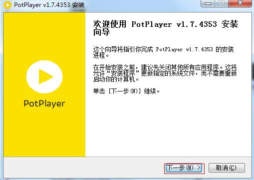
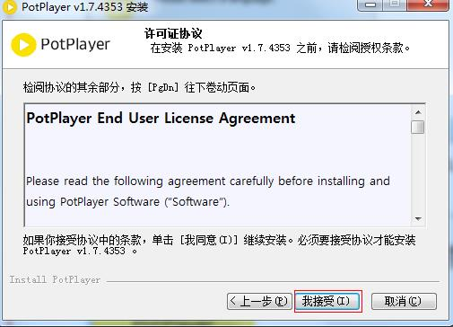
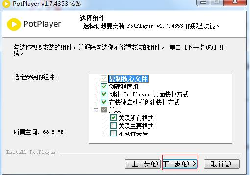
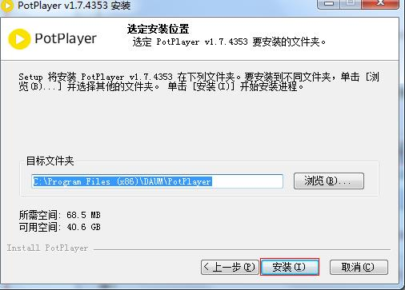
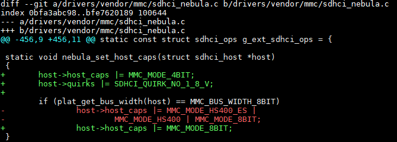
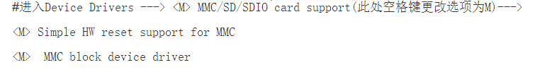
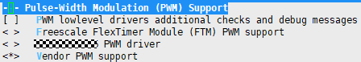
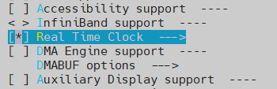
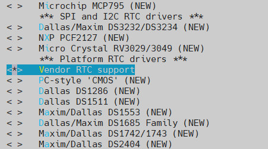
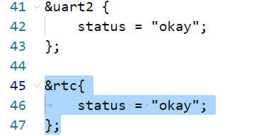

前言
前言
本文档主要是指导使用网络、USB和eMMC卡等驱动模块的相关人员，通过一定的步骤和方法对和这些驱动模块相连的外围设备进行控制，主要包括操作准备、操作过程、操作中需要注意的问题以及操作示例。
说明：
本文仅支持musl库的工具链arm-openeuler-linux-musleabi。
本文档仅适用于Linux操作系统。
以下描述以Hi3516CV610为例，无特殊说明，Hi3516CV608的描述与Hi3516CV610一致。
与本文档相对应的产品版本如下。
本文档（本指南）主要适用于以下工程师：
- 技术支持工程师
- 软件开发工程师
FEMAC操作指南
操作示例
默认情况下，相关FEMAC模块已全部编入内核，不需要执行加载操作，请直接跳至配置IP地址步骤。
内核下使用网口的操作涉及到以下几个方面：
-
FEMAC模块支持TSO功能且默认是打开的，如果用户希望关闭TSO功能，可通过工具ethtool将其关闭。开关TSO功能的方法如下：
- 关闭TSO：./ethtool -K eth0 tso off
- 打开TSO：./ethtool -K eth0 tso on
TSO（TCP Segment Offload）功能简介：
- TSO (TCP Segmentation Offload)是一种利用网卡分割大数据包，减小CPU负荷的一种技术，也被叫做LSO (Large Segment Offload)，如果数据包的类型只能是TCP，则被称之为TSO，如果硬件支持TSO功能的话，也需要同时支持硬件的TCP校验计算和分散-聚集 (Scatter Gather) 功能。TSO的实现，其实是由软件和硬件结合起来完成的，具体说来，硬件能够对大的数据包进行分片，并对每个分片附着相关的头部。
- 芯片使用TSO时，会把一部分由CPU处理的工作转移到由网卡来处理，减轻CPU的压力，提高性能。
-
配置ip地址和子网掩码
-
设置缺省网关
-
mount nfs
-
shell下使用tftp上传下载文件
前提是在server端有tftp服务软件在运行。
-
下载文件：tftp -r XX.file serverip -g
其中：XX.file为需要下载的文件，serverip需要下载的文件所在的server的ip地址。
-
上传文件：tftp -l xx.file remoteip -p
其中，xx.file为需要上传的文件，remoteip文件需要上传到的server的ip地址。
-
IPv6说明
发布包中默认关闭了IPv6功能。如果要打开IPv6，需要修改内核选项，并重新编译内核。具体操作如下：
cd third_party/linux/linux-5.10.y
cp arch/arm/configs/hi3516cv610_defconfig .config
make ARCH=arm CROSS_COMPILE=arm-openeuler-linux-musleabi- menuconfig
进入如下目录，将“The IPv6 protocol”配置选项勾选上。
IPv6环境配置如下：
-
配置ip地址及缺省网关
-
Ping某个- IPv6地址
Ipfrag 参数配置
当接收大带宽、报文长度较大的 UDP 数据流，且网络不稳定的情况下，可能导致分片内存被耗尽，协议栈主动丢包，建议适当增大IP 参数 ipfrag_high_thresh、ipfrag_low_thresh 的值，当前的默认值为 4194304、3145728。
修改方法：xxx 为要设置的值
~ # echo xxx > /proc/sys/net/ipv4/ipfrag_high_thresh
~ # echo xxx > /proc/sys/net/ipv4/ipfrag_low_thresh
参数说明：
ipfrag_high_thresh 参数用来设置内核中可用来做 IP 分段重组的最大内存值。当达到该最大边界时, 负责分段重组的 handler 将会丢弃所有待处理的 ip 分段，直到占用的内存恢复到最小边界值 ipfrag_low_thresh。
USB操作指南
操作准备
当前Hi3516CV610只有一个USB2.0口，可在Host模式或者Device模式中二选一使用。启动后必须通过命令进行模式切换，切换方法查看内核下USB Device操作过程末尾的说明。
USB的操作准备如下：
- U-boot和Linux内核使用SDK发布的U-boot和kernel。
- 文件系统可以使用本地文件系统jffs2、ext4或cramfs，也可以使用NFS。
操作过程
U-Boot 下USB Host操作过程
当前U-Boot下只支持纯存储类设备，如：U盘，硬盘等。不支持带CD-ROM分区的设备，对接PC看设备盘符，如果有光盘驱动盘符即为有CD-ROM分区。
编译U-Boot下USB相关的驱动。
-
进入menuconfig的如下路径，确认以下驱动配置全部选上，默认配置是全选。
-
编译命令：
编译方法参考：bsp/readme_cn.txt中“单独编译非安全启动镜像”步骤流程；
编译生成的 boot_image.bin即为可用的非安全启动boot镜像。
内核下USB Host操作过程
- 启动单板，加载jffs2、ext4或cramfs文件系统，也可以使用NFS。
-
默认USB Host相关模块未编入内核，如要使用需自行打开，打开后可以对U盘、鼠标或者键盘进行相关操作。具体操作请参见“操作示例”。
进入menuconfig，输入"/"检索，回车即可找到对应模块(如/blk_dev_sd)。下面列出部分USB Host相关驱动（其他如USB装网卡驱动，其配置项请通过搜索引擎查阅）。
-
文件系统和存储设备相关模块
- blk_dev_sd
- vfat
- ext4
- scsi_mod
- nls_ascii
- nls_iso8859_1
- nls_codepage_437
-
键盘相关模块
- evdev
- usbhid
-
鼠标相关模块
- mousedev
- usbhid
- evdev
-
USB Host模块
- xhci-hcd
- xhci-plat-hcd
- usb-storage
- wing-ups-phy
- wing-usb
-
内核下USB Device操作过程
-
编译USB Device相关的内核驱动模块。
-
进入menuconfig的如下路径，USB device作为虚拟u盘、虚拟网口、虚拟串口、_录像机_的配置如下。
Device Drivers ---> <*> Multimedia support ---> Media drivers ---> [*] Media USB Adapters ---> <*> USB Video Class (UVC) [*] UVC input events device support [*] V4L platform devices ---> <*> Sound card support ---> <*> Advanced Linux Sound Architecture ---> [*] USB sound devices ---> [*] USB support ---> <*> DesignWare USB3 DRD Core Support DWC3 Mode Selection (Dual Role mode) ---> <*> USB Gadget Support ---> <*> USB Gadget functions configurable through configfs [*] Abstract Control Model (CDC ACM) [*] RNDIS [*] Mass storage [*] Audio Class 1.0 [*] USB Webcam function {*} External Connector Class (extcon) support ---> Vendor driver support ---> <*> Wing USB controller Wing UPS Phy ---> <*> Support Wing UPS Phy [*] Support UPS Xvp Phy [*] Basedrv IP Clock
说明：
1. 当前版本，USB支持启动后配置工作模式（是Host模式还是Device模式）。启动后，通过“cat /proc/wing-usb/10300000.usb20drd/mode”命令查看当前工作模式；通过“echo host > /proc/wing-usb/10300000.usb20drd/mode”切换成Host模式；通过“echo device > /proc/wing-usb/10300000.usb20drd/mode”命令切换成Device模式。
2. USB默认工作在Device模式。如果需要改成默认Host模式，可通过修改设备树文件 hi3516cv610_family_usb.dtsi (见boards/dmeb/dts/)，init_mode="device"改为init_mode="host"，并重新编译烧录。
3. 在通过menuconfig方式修改配置项时，若配置项前面为 *，表明驱动编译进内核；若配置项前面为 M，表明驱动编译成模块。-
编译内核模块，生成.ko文件。
注意：在编译模块时，要先编译内核，编译内核命令为：
-
-
启动单板，加载jffs2、ext4或cramfs文件系统，也可以使用NFS。
- 单板作为Device时，需要加载相关环境变量和配置相关脚本。具体操作请参见“操作示例”。
操作示例
Uboot下U盘操作示例
上电前插入设备
Uboot下不支持热插拔，系统上电之前需要将设备插入U口。
单板上电，进入U-Boot命令行，输入命令：usb start，观察是否识别成功。
-
U口插入高速/超速u盘正常情况下串口打印为：
# usb start USB0: Register 1000140 NbrPorts 1 Starting the controller USB XHCI 1.10 scanning bus 0 for devices... 2 USB Device(s) found scanning usb for storage devices... 1 Storage Device(s) found 说明：
若usb start后出现识别枚举报错，如：Device not responding to set address等，或者usb start后出现完全无法检测到设备，请在U-Boot命令行执行：setenv usb_pgood_delay XXX，该设置针对某些预热较慢的设备，增加timeout等待设备上电稳定，XXX可根据当前设备的预热快慢设置合理的值，建议取值范围为500-3000。识别完成后，再输入命令：usb tree，查看识别速率。
-
U口插入高速/超速u盘正常情况下串口打印为：
初始化及应用
识别完成以后，进行以下操作。
-
查看设备信息。
Uboot命令行执行：usb info [dev]，可以查看当前控制器上接的所有设备的设备信息，可在命令后加参数查看单个具体设备的信息，如：usb info 2，正常查看示例如下：
# usb info 2 config for device 2 2: Mass Storage, USB Revision 2.0 - Generic Mass Storage B92AAF26 - Class: (from Interface) Mass Storage - PacketSize: 64 Configurations: 1 - Vendor: 0x058f Product 0x6387 Version 1.0 Configuration: 1 - Interfaces: 1 Bus Powered 200mA Interface: 0 - Alternate Setting 0, Endpoints: 2 - Class Mass Storage, Transp. SCSI, Bulk only - Endpoint 1 Out Bulk MaxPacket 512 - Endpoint 2 In Bulk MaxPacket 512 -
对U盘进行读操作。
Uboot命令行执行：usb read addr blk# cnt，使用命令将起始地址为blk大小为cnt的数据读到DDR地址addr的位置。正常读操作完成示例如下：
-
对U盘进行写操作。
Uboot命令行执行：usb write addr blk# cnt，使用命令将DDR地址addr的cnt大小的数据写到U盘的blk位置。正常写操作完成示例如下：
内核下U盘操作示例
插入检测
直接插入U盘，观察是否枚举成功。
USB口插入高速U盘的正常串口打印为：
~ # usb 1-1: new high-speed USB device number 2 using xhci-hcd
scsi2 : usb-storage 1-1:1.0
scsi 2:0:0:0: Direct-Access 1.00 PQ: 0 ANSI: 4
sd 2:0:0:0: [sda] 15131636 512-byte logical blocks: (7.74 GB/7.21 GiB)
sd 2:0:0:0: [sda] Write Protect is off
sd 2:0:0:0: [sda] Write cache: disabled, read cache: enabled, doesn't support DPO or FUA
sda: sda1
sd 2:0:0:0: [sda] Attached SCSI removable disk
其中：sda1表示U盘或移动硬盘上的第一个分区，当存在多个分区时，会出现sda1、sda2、sda3等字样。
初始化及应用
模块插入完成后，进行如下操作：
sdXY中X代表磁盘号，Y代表分区号，请根据具体系统环境进行修改。
- 分区命令操作的具体设备节点为sdX，示例：$ fdisk /dev/sda
- 用mkdosfs工具格式化的具体分区为sdXY：~ $ mkdosfs -F 32 /dev/sda1
-
挂载的具体分区为sdXY：~ $ mount -t vfat /dev/sda1 /mnt
-
查看分区信息。
- 运行命令“ls /dev”查看系统设备文件，若没有分区信息sdXY，表示还没有分区，请参见“用fdisk工具分区”进行分区后，进入步骤 2。
- 若有分区信息sdXY，则已经检测到U盘，并已经进行分区，进入步骤 2。
-
查看格式化信息。
- 若没有格式化，请参见“ 用mkdosfs工具格式化”进行格式化后，进入步骤 3。
- 若已格式化，进入步骤 3。
-
挂载目录，请参见“挂载目录”。
- 对硬盘进行读写操作，请参见“读写文件”。
内核下键盘操作示例
键盘操作过程如下：
-
插入模块。
插入键盘相关模块后，键盘会在/dev/input目录下生成event0节点。
-
接收键盘输入。
执行命令：cat /dev/input/event0
然后在USB键盘上敲击，可以看到屏幕有输出。
内核下鼠标操作示例
鼠标操作过程如下：
-
插入模块。
插入鼠标相关模块后，鼠标会在/dev/input目录下生成mouse0节点。
-
接收鼠标输入。
执行命令：cat /dev/input/mouse0
-
进行鼠标操作（点击、滑动等），可以看到串口打印出相应码值。
注意：
/dev/input/mouse0节点需要打开如下的内核选项，否则无法进行以上的操作步骤，Hi3516CV610默认无此节点。
内核下虚拟U盘操作示例
单板作为虚拟U盘时，以Flash和SD卡做存储介质为例，操作过程如下：
-
配置环境变量和脚本。
-
以Flash作为虚拟U盘的存储介质，操作为：
export VID="0x1D6B" export PID="0x0001" export MANUFACTURER="Vendor" export PRODUCT="MassStorage" export SERIALNUMBER="123456789012" export MEMORY=/dev/mtdblockX ./Config_Storage.sh其中，mtdblockX为Flash的第X个分区，请用户根据具体情况选择。
-
以SD卡作为虚拟U盘的存储介质，操作为：
export VID="0x1D6B" export PID="0x0001" export MANUFACTURER=" Vendor" export PRODUCT="MassStorage" export SERIALNUMBER="123456789012" export MEMORY=/dev/mmcblk0pX ./Config_Storage.sh其中，mmcblk0pX为SD卡的第X个分区，请用户根据具体情况选择。
说明：
1. 上述export所修饰的变量用户可自主适配，变量所表示的含义如下：
- VID表示厂商ID，使用时必须修改；
- PID表示产品ID，使用时必须修改；
- MANUFACTURER表示厂商名，默认发布是Vendor，使用时必须修改；
- PRODUCT表示产品名，使用时请按需求修改；
- SERIALNUMBER表示产品序列号，使用时请按需求修改；
2. Config_Storage.sh为启动mass storage所进行的必要操作，用户可不用修改。
Config_Storage.sh见附录：虚拟U盘
1. 若要卸载存储功能模块，执行Disable_Storage.sh即可，脚本内容用户可不用修改。
Disable_Storage.sh见附录：虚拟U盘
-
-
通过USB将单板与PC端相连，此时PC端可识别到盘符。至此，单板可以当做真正的U盘使用。
内核下虚拟网口操作示例
单板作为虚拟网口设备，操作过程如下：
-
配置环境变量和脚本。
export VID="0x1D6B" export PID="0x0002" export MANUFACTURER="Vendor" export PRODUCT="Ethernet" export SERIALNUMBER="123456789012" ./Config_Ether.sh 说明：
1. 上述export所修饰的变量用户可自主适配，变量所表示的含义如下：
- VID表示厂商ID，使用时必须修改；
- PID表示产品ID，使用时必须修改；
- MANUFACTURER表示厂商名，默认发布是Vendor，使用时必须修改；
- PRODUCT表示产品名，使用时必须修改；
- SERIALNUMBER表示产品序列号，使用时请按需求修改；
2. Config_Ether.sh为启动虚拟网口所进行的必要操作，用户可不用修改。
Config_Ether.sh见附录：虚拟网口
3. 若要卸载网口功能模块，执行Disable_ Ether.sh即可，脚本内容用户可不用修改。
Disable_ Ether.sh见附录：虚拟网口 -
通过USB数据线将单板与Host pc端相连，若pc系统为win10系统，pc端会自动加载驱动，在设备管理器的网络适配器部分可以看到Remote NDIS Compatible Device #x设备，但部分pc可能会识别为串口设备，解决方法见步骤4后的说明；若pc系统为win7系统，第一次可能会失败，需要自行安装驱动，方法为：
- 右击计算机，进入管理界面；
- 打开设备管理器；
- 点击其他设备会看到Ethernet，双击；
- 打开驱动程序界面，点击更新驱动程序，进入浏览计算机以查找驱动程序软件(R)；
-
把路径指向linux.inf所在的目录，将下面文件下载到本地目录，点击下一步，计算机会自动进行安装驱动程序，安装成功后，点击网络适配器会看到Ethernet Linux USB Ethernet /RNDIS Gadget #x。
linux.inf文件取自发布包路径为：third_party/linux/linux-5.10.y/Documentation/usb/
-
在单板端配置IP，命令为：ifconfig usb0 xx.xx.xx.xx netmask 255.255.xxx.0;route add default gw xx.xx.xx.xx。
- 当单板和pc通过USB数据线相连时，会在PC端生成USB网络节点，具体位置：打开网络和共享中心-->更改适配器设置-->Linux USB Ethernet /RNDIS Gadget #x。对该节点设置网络IP，则单板和PC可以相互ping通，并且通信。
内核下虚拟串口操作示例
单板作为虚拟串口设备，操作过程如下：
-
配置环境变量和脚本。
export VID="0x1D6B" export PID="0x0003" export MANUFACTURER="Vendor" export PRODUCT="SerialGadget" export SERIALNUMBER="123456789012" ./Config_Serial.sh 说明：
1. 上述export所修饰的变量用户可自主适配，变量所表示的含义如下：
- VID表示厂商ID，使用时必须修改；
- PID表示产品ID，使用时必须修改；
- MANUFACTURER表示厂商名，默认发布是Vendor使用时必须修改；
- PRODUCT表示产品名，使用时必须修改；
- SERIALNUMBER表示产品序列号，使用时请按需求修改；
1. Config_Serial.sh为启动虚拟串口所进行的必要操作，用户可不用修改。
Config_Serial.sh见附录：虚拟串口
2. 若要卸载串口功能模块，执行Disable_Serial.sh即可，脚本内容用户可不用修改。
Disable_Serial.sh见附录：虚拟串口 -
在单板端，进行如下操作：
vi /etc/inittab ttyS000::respawn:/bin/sh -c "login -f root" ::respawn:/sbin/getty -L ttyGS0 115200 vt100 -n root -I "Auto login as root ..."然后重启单板。
-
通过USB数据线将单板与Host pc端相连，
若pc系统为win10系统，pc端会自动加载驱动。
若pc系统为win7系统，第一次可能会失败，需要自行安装驱动，方法为：
- 右击计算机，进入管理界面；
- 打开设备管理器；
- 点击其他设备会看到名为PRODUCT变量的设备（如SerialGadget），双击；
- 打开驱动程序界面，点击更新驱动程序，进入浏览计算机以查找驱动程序软件(R)。
-
把路径指向linux-cdc-acm.inf所在的目录，将下面文件下载到本地目录，点击下一步，计算机会自动进行安装驱动程序，安装成功后，点击端口（COM和LPT），会看到Gadget Serial（COMx）设备，若pc为win10系统，不需要自行安装驱动即可在端口（COM和LPT）看到USB串行设备（COMx）设备。
linux-cdc-acm.inf文件取自Linux Kernel源码./Documentation/usb/目录下。
内核下录像机操作示例
表 1 UVC解决方案特性表
须知：
- 双路UVC资源依赖
默认端点数无法满足双路UVC需求，需打开如下内核配置选项关闭UVC status端点以支持双路UVC（默认关闭）：
Device Drivers ---> USB support ---> USB Gadget Support ---> USB Gadget functions configurable through configfs ---> [*] USB Webcam function [*] USB Gadget Webcam without status interrupt endpoint
受限于内存大小和USB带宽限制，默认双路UVC配置仅支持部分分辨率（请见步骤 2配置脚本），若要更支持高分辨率，需自行管理OS及MMZ内存的分配。
- Still Image资源依赖
支持Still Image需打开如下内核配置选项（默认关闭，且与UVC status端点选项互斥）:
Device Drivers ---> USB support ---> USB Gadget Support ---> USB Gadget functions configurable through configfs ---> [*] USB Webcam function [*] UVC Still Image
method2使用视频管道传输，isoc模式默认支持的Still Image最大4M大小截图（即最大YUYV 1080p），若需更大截图，通过内核defconfig参数USB_STILL_MAX_IMAGE_SIZE调节（针对isoc传输），bulk模式无此限制；method3使用独立管道传输，截图过程不影响视频传输，但会多使用一个USB端点。
若内核不打开Still Image选项，建议将{SDK_PATH}/soc/drivers/mpp/sample/uvc_app/uvc.h中的”#define UVC_STILL_IMAGE”注释掉，否则会有不影响使用的错误打印。
单板作为_录像机_设备，操作过程如下：
-
编译uvc_app应用程序：
- 进入{SDK_PATH}/soc/drivers/mpp/sample/目录，修改Makefile.param，选择正确的sensor类型。
- 参考{SDK_PATH}/soc/drivers/mpp/sample/uvc_app目录下的readme.txt和alsa_readme.txt文件编译sample_uvc
-
export VID="0x1D6B" export PID="0x0004" export MANUFACTURER="Vendor" export PRODUCT="Camera" export SERIALNUMBER="123456789012" export BCDUVC="0x0110" #export TransferMode="bulk" #export PerfMode="v4l2" #export StillCaptureMethod=2 # Supported only in PerfMode="v4l2". export UVC_DEVICE_CNT=1 # 1 or 2, only 1 if enable still image (StillCaptureMethod) export CamControl1=0xFF export CamControl2=0x7F export CamControl3=0x3E export ProcControl1=0xFF export ProcControl2=0xFF export ProcControl3=0x07 export EcdControl1=0xff export EcdControl2=0xff export EcdControl3=0x0f export EcdRtControl1=0xff export EcdRtControl2=0xff export EcdRtControl3=0x0f export ExtControl1=0xff export ExtControl2=0xff export YUYV="360p 720p 1080p 1440p" export NV21="360p 720p 1080p 1440p" export NV12="360p 720p 1080p 1440p" export MJPEG="360p 720p 1080p 1440p" export H264="360p 720p 1080p 1440p" export H265="360p 720p 1080p 1440p" # Memory size may not support some resolutions in v4l2 mode. if [ "$StillCaptureMethod" == 2 -o "$StillCaptureMethod" == 3 -o "${PerfMode}" == "v4l2" ] ; then export YUYV="360p 720p 1080p" export NV21="360p 720p 1080p" export NV12="360p 720p 1080p" fi # Memory size and usb bandwidth may not support some resolutions in Dual-channel uvc mode. if [ ${UVC_DEVICE_CNT} != 1 ] ; then export YUYV="360p" export NV21="360p" export NV12="360p" export MJPEG="360p 720p 1080p" export H264="360p 720p 1080p" export H265="360p 720p 1080p" fi ./ConfigUVC.sh cd ./ko/load3516cv610 ./load3516cv610_20s -i cd - if [ "$PerfMode" == "v4l2" ]; then ./sample_uvc_v4l2 ${UVC_DEVICE_CNT} & else ./sample_uvc ${UVC_DEVICE_CNT} 0 & fi 说明：
1. 上述export所修饰的变量用户可自主适配，变量所表示的含义如下：
- VID表示厂商ID，使用时必须修改；
- PID表示产品ID，使用时必须修改；
- MANUFACTURER表示厂商名，默认发布是Vendor，使用时必须修改；
- PRODUCT表示产品名，使用时必须修改；
- SERIALNUMBER表示产品序列号，使用时请按需求修改；
- CamControl1、CamControl2、CamControl3表示的是UVC CT（Camera Terminal）单元的可控制项，具体请查看《USB_Video_Class_1.1》的3.7.2.3章节；
- ProcControl1、ProcControl2 表示的是UVC PU（Processing Unit）单元的可控制项，具体请查看《USB_Video_Class_1.1》的3.7.2.5章节；
- NV21、MJPEG和H264表示每种格式所支持的分辨率；
- ConfigUVC.sh脚本为启动uvc所进行的必要操作，用户可不用修改；
- ConfigUVC.sh见附录：录像机；
- load3516cv610_20s是加载MPP ko的脚本，请根据芯片实际型号修改该脚本文件名，uvc依赖ot_uvc.ko，若load脚本中没有请在对应位置上加上insmod ot_uvc.ko和rmmod ot_uvc.ko。
- BCDUVC=0x0110表示UVC 1.1，BCDUVC=0x0150表示UVC 1.5。
- TransferMode="bulk"表示使用uvc 使用bulk传输，注释掉或其他值表示uvc 使用isoc传输。
- PerfMode="v4l2"表示使用传统v4l2方式送流(对应应用程序sample_uvc_v4l2)，注释掉或其他值表示使用高性能0拷贝方式送流(对应应用程序sample_uvc)。
- StillCaptureMethod=2表示支持Still Image method2，"=3"表示支持Still Image method3，"=0"或注释掉表示不支持Still Image功能。
- UVC_DEVICE_CNT=1表示使用单路UVC，"=2”表示使用双路UVC。
- 脚本中的“./load3516cv610_20s -i”语句为加载媒体驱动的命令，请根据项目实际需要正确配置参数。
2. /root/ko目录为媒体相关驱动。 -
通过USB数据线将单板与PC相连，PC端识别后，设备列表会出现AC Interface和UVC Camera，代表识别正常，如图1所示。
-
PC端使用PotPlayer软件进行音视频捕获，软件可以到官网下载(32位PC机请下载32-bit PotPlayer，64位PC机请下载64-bit PotPlayer)，例如：
https://daumpotplayer.com/download/
 说明：
说明：
AMCAP是基于Windows DirectShow技术开发，会采用Windows 自带的DTV-DVD H.264解码器解码H.264码流，会使H.264解码卡顿或花屏。不推荐采用AMCAP等其他软件。 -
PotPlayer软件安装。安装过程中，请注意最后一步，Detect H/W decoder/encoder选项需要选中(默认是没有选中)，其他步骤选择默认，具体安装过程如图2所示





至此安装完毕。
-
PC端执行使用软件PotPlayer采集数据：
- 单击“PotPlayer”，选中“选项”，如图3所示。
- 按图4所示操作，在选项对话框中进行设置，最后打开设备，即可看到图像。


复合设备
受限于芯片硬件，当前Hi3516CV610复合设备仅支持UVC+UAC。
此外，对内核使能CONFIG_UVC_NO_STATUS_INT_EP配置项后，可支持复合设备UVC+ACM。使能方式可参考如下步骤。
- 先整编SDK；
-
进入内核目录，修改内核配置项：具体修改方法为在所使用的内核配置文件（如 arch/arm/configs/hi3516cv610_defconfig）内找到CONFIG_MPP_TO_GADGET_UVC=y并在其后添加一行CONFIG_UVC_NO_STATUS_INT_EP=y；也可以通过如下命令一次性修改所有内核配置文件：
-
重新编译内核生成镜像并烧写。
- ConfigUVC.sh复合ACM设备修改。
- 在【mkdir configs/c.1/】的上一行加入【mkdir functions/acm.0】
- 在【ln -s functions/uvc.usb${i}/ configs/c.1/】的下两行插入【ln -s functions/acm.0/ configs/c.1/】
操作中需要注意的问题
操作中需要注意的问题如下：
- 在操作时请尽量按照完整的操作顺序进行操作（mount→操作文件→umount），以免造成文件系统的异常。
- 目前键盘和鼠标的驱动要和上层结合使用，比如鼠标事件要和上层的GUI结合。对键盘的操作只需要对/dev下的event节点读取即可，而鼠标则需要标准的库支持。
-
在Linux系统中提供了一套标准的鼠标应用接口libgpm，如果需要使用鼠标客户可自行编译此库。在使用时建议使用内核标准接口gpm。
已测试通过的标准接口版本：gpm-1.20.5。
另外在gpm中还提供了一整套的测试工具源码（如：mev等），用户可根据这些测试程序进行编码等操作，降低开发难度。
-
USB Device单板要插入模块后，再与Host端相连，否则Host端将不识别Device设备，并循环打印错误信息。
- 作为USB device网口功能时，在每次重启单板后，请删除以前网桥并重新建立新的网桥。
- 进行Host、Device模式切换时，USB链路上不能有数据传输，以避免控制器异常。
eMMC操作指南
操作准备
eMMC卡的操作准备如下：
- U-boot和Linux内核使用SDK发布的U-boot和kernel。
-
文件系统。
可以使用SDK发布的本地文件系统jffs2、ext4或squashFS，也可以通过本地文件系统再挂载到NFS。
操作过程
操作过程如下：
- 启动单板，加载本地文件系统jffs2、ext4或squashFS，也可以通过本地文件系统进一步挂载到NFS。
-
加载内核。默认eMMC相关模块已全部编入内核，不需要再执行加载命令。下面列出eMMC所有相关驱动：
-
文件系统和存储设备相关模块
- nls_base
- nls_cp437
- fat
- vfat
- msdos
- mke2fs
- nls_iso8859-1
- nls_ascii
-
eMMC相关模块
-
Linux 下需要打开配置选项:
-
CONFIG_MMC
-> Device Drivers
-> MMC/SD/SDIO card support
-
CONFIG_MMC_SDHCI
-> Device Drivers
-> MMC/SD/SDIO card support
-> Secure Digital Host Controller Interface support
-
MMC_SDHCI_PLTFM
-> Device Drivers
-> MMC/SD/SDIO card support
-> Secure Digital Host Controller Interface support
-> SDHCI platform and OF driver helper
-
CONFIG_MMC_SDHCI_NEBULA
-> Device Drivers
-> Vendor driver support
-> SDHCI nebula support
-
-
U-Boot 下打开配置选项:
-
CONFIG_MMC_SDHCI
-> Device Drivers
-> MMC Host controller Support
-> Secure Digital Host Controller Interface support
-
CONFIG_MMC_SDHCI_ADMA
-> Device Drivers
-> MMC Host controller Support
-> Support SDHCI ADMA2
-
CONFIG_MMC_SDHCI_NEBULA
-> Device Drivers
-
Vendor driver support --->
-> SDHCI support for the Soct SD/SDIO/eMMC controller
-
-
-
-
通常情况eMMC是焊接单板上的，加载驱动后有eMMC识别打印，如果MMC驱动模块已经编译进内核启动后eMMC会自动识别（相关管脚复用需配置正确），然后可以对eMMC进行相关操作，具体操作请参见“操作示例”。
操作示例
在控制台下实现读写eMMC的操作示例如图1所示。

初始化及应用，待eMMC识别后，进行如下操作：
其中X为分区号，由fdisk工具分区时决定，具体操作步骤如下。
- 命令fdisk操作的具体目录需改为：~ $ fdisk /dev/mmcblk0
- 用mkdosfs工具格式化的具体目录需改为：~ $ mkdosfs -F 32 /dev/mmcblk0pX
- 用mke2fs工具格式化的具体目录需改为：~ $ mke2fs /dev/mmcblk0pX
-
挂载的具体目录需改为：~ $ mount -t type /dev/mmcblk0pX /mnt，其中type是文件系统类型（vfat / ext4等）
-
查看分区信息。
- 控制台输入ls /dev | grep mmcblk, 若没有显示出mmcblk0pX，表示还没有分区，如果单板是spi nand/nor等方式启动，请参见“用fdisk工具分区”进行分区后，进入步骤 2，如果是单板是eMMC启动，须通过在bootargs增加分区的方式增加分区，请参见“修改bootargs方式增加分区”，进入步骤2。
- 若有分区信息pX，则eMMC分区已经检测到，并已经进行分区，进入步骤 2。
-
查看格式化信息。
- 若没有格式化，请参见“用mkdosfs工具格式化”或“用mke2fs工具格式化”进行格式化后，进入步骤 3。
- 若已格式化，进入步骤 3。
-
挂载目录，请参见“挂载目录”。
- 对eMMC分区进行读写操作，请参见“读写文件”
修改bootargs方式增加分区
修改bootargs方式增加分区步骤如下：
-
启动控制台输入Ctrl +C 进入U-Boot。
-
控制台输入printenv命令查看当前bootargs
-
增加分区（举例：新增分区大小500M）
-
重启进入到kernel可以看到新增分区4 大小500M（前3个分区分别是boot,kernel,rootfs）
操作中需要注意的问题
在正常操作过程中需要遵守的事项：
- 每次需要读写eMMC分区时，必须确保eMMC已经创建分区，并将该分区格式化（vfat / ext4等），并使用mount挂载，挂载后才能读写对应分区。
- 每次读写操作前需要使用mount命令挂载系统。
- 断电前建议umount挂载点（建议正常的操作顺序是先umount，后断电操作等）。
在正常操作过程中不能进行的操作：
- 读写eMMC分区时建议不要对单板做断电操作，否则可能导致卡中文件或文件系统被破坏。
- 当前目录处于挂载目录时，不能umount操作，必须转到其它目录下才能umount操作。
- 系统中读写挂载目录的进程没有完全退出时，不能umount操作，必须完全结束操作挂载目录的任务才能正常umount操作。
其他注意事项
eMMC工作模式是HS400（在8bit模式下）或者HS200（在4bit模式下）需1.8V供电，3.3V工作电压下eMMC不支持高速模式，如3.3V供电，需按照图1修改和图2修改，将工作模式改为HS模式。


MMC驱动模块ko的编译及加载方法
内核中mmc驱动通常是默认与内核一起编译的（build-in），即内核启动过程会加载mmc驱动。如果使用eMMC或SD卡来存储启动镜像和文件系统，就需要采用这种build-in方式，否则无法正常加载至内核。如果要将mmc驱动模块化编译，进行手动加载，必须使用非mmc介质存储启动镜像和文件系统，具体可以参考如下（以Hi3516CV610 SPI NOR/NAND介质启动场景为例）。
-
进入内核源码，执行menuconfig命令
make ARCH=arm CROSS_COMPILE=arm-openeuler-linux-musleabi- hi3516cv610_defconfig
make ARCH=arm CROSS_COMPILE=arm-openeuler-linux-musleabi- menuconfig
-
选中MMC驱动相关选项

-
保存menuconfig配置，编译内核镜像
执行make ARCH=arm CROSS_COMPILE=arm-openeuler-linux-musleabi- savedefconfig，生成defconfig文件
将生成的defconfig文件拷贝为新的deconfig文件，执行cp defconfig arch/arm/configs/hi3516cv610_new_defconfig
进入bsp目录，重新执行make KERNEL_CFG=hi3516cv610_new_defconfig kernel
boards/dmeb/pub/hi3516cv610_image_musl/uImage即为所编译内核镜像，将其烧进单板
-
回到内核源码，编译ko模块
make ARCH=arm CROSS_COMPILE=arm-openeuler-linux-musleabi- -j /** 单独编译MMC驱动模块，可执行： make ARCH=arm CROSS_COMPILE=arm-openeuler-linux-musleabi- modules M=drivers/mmc make ARCH=arm CROSS_COMPILE=arm-openeuler-linux-musleabi- modules M=drivers/vendor **/执行完成后将生成以下ko文件，如图1和图2所示。将mmc_core.ko、mmc_block.ko、sdhci_complement.ko、sdhci.ko、sdhci_pltfm.ko、sdhcinebula.ko（共六个）拷贝出来，放进单板文件系统。
-
加载驱动模块
insmod mmc_core.ko
insmod mmc_block.ko
insmod sdhci_complement.ko
insmod sdhci.ko
insmod sdhci-pltfm.ko
insmod sdhcinebula.ko
执行lsmod命令，即可查看已加载驱动模块，如图3所示。


I2C操作指南
操作准备
I2C的操作准备如下：
- Linux内核使用SDK发布的kernel。
-
文件系统。
可以使用SDK发布的本地文件系统jffs2、ext4或squashFS，也可以通过本地文件系统再挂载到NFS。
操作过程
操作过程如下：
- 启动单板，加载本地文件系统jffs2、ext4或squashFS，也可以通过本地文件系统进一步挂载到NFS。
- 加载内核。默认I2C相关模块已全部编入内核，不需要再执行加载命令。
- 配置管脚复用（U-Boot下需手动配置i2c crg寄存器打开时钟门控）。
- 在控制台下运行I2C读写命令或者自行在内核态或者用户态编写I2C读写程序，就可以对挂载在I2C控制器上的外围设备进行读写操作。具体操作请参见“操作示例”。
接口速率设置说明
发布包中默认接口速率是400K。如果要更改接口速率，需要修改boards/dmeb/dts/hi3516cv610-open.dtsi 中 i2c_bus0节点中的clock-frequency属性的值，并重新编译内核。
i2c_bus0: i2c@11060000 {
compatible = "vendor,i2c";
reg = <0x11060000 0x1000>;
clocks = <&clock HI3516CV610_I2C0_CLK>;
clock-frequency = <400000>;
resets = <&clock 0x4280 0>;
reset-names = "i2c_reset";
status = "disabled";
#address-cells = <1>;
#size-cells = <0>;
};
操作示例
I2C读写命令示例
此操作示例通过I2C读写命令实现对I2C外围设备的读写操作。
-
U-Boot下使用I2C命令需要在编译U-Boot时打开CONFIG_CMD_I2C选项Command line interface --> Device access commands-->i2c，如图1所示。
-
其次打开include/configs/hi3516cv610.h文件，将CONFIG_I2C_BSP宏打开，如图2所示。
-
U-Boot下使用i2c命令对I2C外围设备进行读操作：
# i2c dev <i2c_num>
# i2c read <dev_addr> <reg_addr>.<reg_width> <data_width> <ddr_addr>
例如：读挂载在I2C控制器0上、设备地址为0x72设备的0x8寄存器：
# i2c dev 0
# i2c read 0x72 0x8.1 1 0x41000000
-
linux下在控制台使用i2c_read命令对I2C外围设备进行读操作：
例如：读挂载在I2C控制器0上、设备地址为0x72设备的0x8寄存器：
说明：
i2c_num：I2C控制器序号（对应芯片手册中的I2C控制器编号）
dev_addr：外围设备地址（支持标准地址（7bit）和扩展地址（10bit））
reg_addr：读外围设备寄存器操作的开始地址
reg_addr_end：读外围设备寄存器操作的结束地址
reg_width：外围设备的寄存器位宽（支持8/16bit）
data_width：外围设备的数据位宽（支持8/16bit）
reg_step：连续读外围设备寄存器操作时递增幅值，默认为1，即连续读寄存器，读取单个寄存器时不使用该参数
ddr_addr: ddr地址，将i2c读取到的数据存到该位置，可使用md <ddr_addr>命令查看读取的数据 -
U-Boot下使用i2c命令对I2C外围设备进行写操作：
# i2c dev <i2c_num>
# mw.b <ddr_addr> <value> <data_width>
# i2c write <ddr_addr> <dev_addr> <reg_addr>.<reg_width> <data_width>
例如：向挂载在I2C控制器0上、设备地址为0x72设备的0x8寄存器写入数据0xa5：
# i2c dev 0
# mw.b 0x41000000 0xa5 0x1
# i2c write 0x41000000 0x72 0x8.1 1
-
linux下在控制台使用i2c_write命令对I2C外围设备进行写操作：
例如：向挂载在I2C控制器0上、设备地址为0x72设备的0x8寄存器写入数据0xa5：
说明：
i2c_num：I2C控制器编号（对应芯片手册中的I2C控制器编号）
dev_addr：外围设备地址（支持标准地址（7bit）和扩展地址（10bit））
reg_addr：写外围设备寄存器操作的地址
value：写外围设备寄存器操作的数据
reg_width：外围设备的寄存器位宽（支持8/16bit）
data_width：外围设备的数据位宽（支持8/16bit）
ddr_addr: ddr地址，用于存放value


内核态I2C读写程序示例
此操作示例在linux下通过I2C内核态读写程序实现对I2C外围设备的读写操作。
-
调用I2C核心层的函数，获得描述一个I2C控制器的结构体i2c_adap：
说明：
假设我们已经知道新增的器件挂载在I2C控制器0上，直接设置i2c_get_adapter的参数为0。 -
把I2C控制器和新增的I2C外围设备关联起来，得到描述I2C外围设备的客户端结构体bsp_client：
说明：
bsp_info结构体提供了I2C外围设备的设备地址。 -
在非中断上下文中，调用I2C核心层提供的标准读写函数对外围器件进行读写：
在中断上下文中，调用I2C驱动层的读写函数对外围器件进行读写：
说明：
- 参数client为步骤2得到的描述I2C外围设备的客户端结构体bsp_client。
- 参数buf为需要读写的寄存器和数据。
- 参数count为buf的长度。
- 参数msg为读操作时的两个i2c_msg的首地址。代码示例如下：
说明：
此代码为示例程序，仅为客户开发内核态的I2C外围设备驱动程序提供参考，不提供实际应用功能。//I2C外围设备信息列表
//一项I2C_BOARD_INFO代表一个支持的I2C外围设备，它的名字叫做"bsp_test”，设备地址是0x39
说明：
在代码调用中，器件地址不能包含读写位，但命令行中需要包含读写位。static struct i2c_client *bsp_client = NULL; int bsp_i2c_write(unsigned int reg_addr, unsigned int reg_addr_num, unsigned int data, unsigned int data_byte_num) { unsigned char buf[8]; int ret = 0; int idx = 0; struct i2c_client *client; client = bsp_client; /* reg_addr config */ if (reg_addr_num == 2) buf[idx++] = (reg_addr >> 8); buf[idx++] = reg_addr; /* data config */ if (data_byte_num == 2) buf[idx++] = data >> 8; buf[idx++] = data; //在非中断上下文中，调用内核提供的I2C标准写函数进行写操作 ret = i2c_master_send(client, buf, idx); //在中断上下文中，调用驱动层提供的写函数进行写操作 ret = bsp_i2c_master_send(client, buf, idx); return ret; } static struct i2c_msg g_msg[2]; int bsp_i2c_read(unsigned int reg_addr, unsigned int reg_addr_num, unsigned int data_byte_num) { unsigned char buf[4]; int ret = 0; int ret_data = 0xFF; int idx = 0; struct i2c_client *client; struct i2c_msg *msg; client = bsp_client; msg = &g_msg[0]; memset(msg, 0x0, sizeof(struct i2c_msg) * 2); msg[0].addr = bsp_client->addr; msg[0].flags = client->flags & I2C_M_TEN; msg[0].len = reg_addr_num; msg[0].buf = buf; /* reg_addr config */ if (reg_addr_num == 2) buf[idx++] = reg_addr >> 8; buf[idx++] = reg_addr; msg[1].addr = bsp_client->addr; msg[1].flags = client->flags & I2C_M_TEN; msg[1].flags |= I2C_M_RD; msg[1].len = data_byte_num; msg[1].buf = buf; //sensor的读操作一般需要先写一个寄存器地址，才能读出指定寄存器的数据。 //在非中断上下文中，需要调内核提供的i2c_transfer传两个msg进行先写后读。 ret = i2c_transfer(client->adapter, msg, 2); //在中断上下文中，需要调内核提供的bsp_i2c_transfer传两个msg进行先写后读。 ret = bsp_i2c_transfer(client->adapter, msg, 2); if (ret == 2) { if (data_byte_num == 2) ret_data = buf[1] | (buf[0] << 8); else ret_data = buf[0]; } else ret_data = -EIO; return ret_data; } static int bsp_dev_init(void) { //分配一个I2C控制器指针 struct i2c_adapter *i2c_adap; //调用core层的函数，获得描述一个I2C控制器的结构体i2c_adap。假设我们已经知道新增的外围设备挂载在编号为I2C控制器2上 i2c_adap = i2c_get_adapter(2); //把I2C控制器和新增的I2C外围设备关联起来，I2C外围设备挂载在I2C控制器2，地址是0x72，就组成了一个客户端bsp_client。 bsp_client = i2c_new_device(i2c_adap, &bsp_info); i2c_put_adapter(i2c_adap); return 0; } static void bsp_dev_exit(void) { i2c_unregister_device(bsp_client); }
用户态I2C读写程序示例
此操作示例在linux下通过I2C用户态读写程序实现对I2C外围设备的读写操作。
-
打开I2C总线对应的设备文件，获取文件描述符：
-
进行数据读写：
代码示例如下：
说明：
此代码为示例程序，仅为客户开发用户态的外围设备驱动程序提供参考，不提供实际应用功能。
用户态具体外围设备驱动程序可以参考发布包中的i2c_ops程序，具体路径为：boards/dmeb/tools/board/reg-tools-1.0.0/source/tools/i2c_ops.cint i2c_read(unsigned int i2c_num, unsigned int dev_addr, unsigned int reg_addr, unsigned int reg_addr_end, unsigned int reg_width, unsigned int data_width, unsigned int reg_step) { int retval = 0; int fd = -1; char file_name[0x10]; unsigned char buf[4]; int cur_addr; static struct i2c_rdwr_ioctl_data rdwr; static struct i2c_msg msg[2]; unsigned int data; memset(buf, 0x0, 4); printf("i2c_num:0x%x, dev_addr:0x%x; reg_addr:0x%x; reg_addr_end:0x%x; reg_width: %d; data_width: %d. \n\n", i2c_num, dev_addr << 1, reg_addr, reg_addr_end, reg_width, data_width); sprintf(file_name, "/dev/i2c-%u", i2c_num); fd = open(file_name, O_RDWR); if (fd < 0) { printf("Open %s error!\n",file_name); return -1; } retval = ioctl(fd, I2C_SLAVE_FORCE, dev_addr); if (retval < 0) { printf("CMD_SET_I2C_SLAVE error!\n"); retval = -1; goto end; } msg[0].addr = dev_addr; msg[0].flags = 0; msg[0].len = reg_width; msg[0].buf = buf; 说明：
在代码调用中，器件地址不能包含读写位，但命令行中需要包含读写位。msg[1].addr = dev_addr; msg[1].flags = 0; msg[1].flags |= I2C_M_RD; msg[1].len = data_width; msg[1].buf = buf; rdwr.msgs = &msg[0]; rdwr.nmsgs = (__u32)2; for (cur_addr = reg_addr; cur_addr <= reg_addr_end; cur_addr += reg_step) { if (reg_width == 2) { buf[0] = (cur_addr >> 8) & 0xff; buf[1] = cur_addr & 0xff; } else buf[0] = cur_addr & 0xff; retval = ioctl(fd, I2C_RDWR, &rdwr); if (retval != 2) { printf("CMD_I2C_READ error!\n"); retval = -1; goto end; } if (data_width == 2) { data = buf[1] | (buf[0] << 8); } else data = buf[0]; printf("0x%x: 0x%x\n", cur_addr, data); } retval = 0; end: close(fd); return retval; } int i2c_write(unsigned int i2c_num, unsigned int dev_addr, unsigned int reg_addr, unsigned int data, unsigned int reg_width, unsigned int data_width) { int retval = 0; int fd = -1; int index = 0; char file_name[0x10]; unsigned char buf[4]; printf("i2c_num:0x%x, dev_addr:0x%x; reg_addr:0x%x; data:0x%x; reg_width: %d; data_width: %d.\n", i2c_num, dev_addr << 1, reg_addr, data, reg_width, data_width); sprintf(file_name, "/dev/i2c-%u", i2c_num); fd = open(file_name, O_RDWR); if (fd<0) { printf("Open %s error!\n", file_name); return -1; } retval = ioctl(fd, I2C_SLAVE_FORCE, dev_addr); if(retval < 0) { printf("set i2c device address error!\n"); retval = -1; goto end; } if (reg_width == 2) { buf[index] = (reg_addr >> 8) & 0xff; index++; buf[index] = reg_addr & 0xff; index++; } else { buf[index] = reg_addr & 0xff; index++; } if (data_width == 2) { buf[index] = (data >> 8) & 0xff; index++; buf[index] = data & 0xff; index++; } else { buf[index] = data & 0xff; index++; } retval = write(fd, buf, (reg_width + data_width)); if(retval < 0) { printf("i2c write error!\n"); retval = -1; goto end; } retval = 0; end: close(fd); return retval; }
u-boot 下i2c 读写示例
此操作示例在U-Boot下通过I2C读写程序实现对I2C外围设备的读写操作。
- 配置相关管脚复用
-
调用初始化函数初始化i2c
说明：
- 参数speed: 表示使用的i2c传输速率(100000/400000)。
- 参数i2c_num: 假设我们已经知道新增的器件挂载在I2C控制器0上，则参数i2c_num传0。 -
调用i2c_read和i2c_write函数对外围器件进行读写
i2c_read(dev_addr, reg_addr, reg_width, buffer, len); i2c_write(dev_addr, reg_addr, reg_width, buffer, len); 说明：
- 参数dev_addr: 外围设备地址（支持标准地址（7bit）和扩展地址（10bit））。
- 参数reg_addr: 外围设备寄存器操作的开始地址。
- 参数reg_width：外围设备的寄存器位宽（支持8/16bit）
- 参数buffer：发送或接收数据的buffer
- 参数len：发送或接收数据的长度示例代码如下：
#define I2C_NUM 0 #define I2C_SPEED_100K 100000 static void i2c_iomux_config(void) { val = 0x1135; writel(0x1135, 0x17940098); val = 0x1135; writel(0x1135, 0x17940098); } 说明：
以i2c0为例，i2c_iomux_config主要做i2c0的sda和scl管脚复用int i2c_sample_write(unsigned int dev_addr, unsigned int reg_addr, unsigned int reg_width) { int ret = 0; int len = 1; unsigned char *buffer; buffer = malloc(len); if (!buffer) return -1; ret = i2c_write(dev_addr, reg_addr, reg_width, buffer, len); if (ret) { printf("i2c write fail!\n"); goto w_fail; } w_fail: free(buffer); return ret; } int i2c_sample_read(unsigned int dev_addr, unsigned int reg_addr, unsigned int reg_width) { int ret = 0; int len = 1; unsigned char *buffer; buffer = malloc(len); if (!buffer) return -1; ret = i2c_read(dev_addr, reg_addr, reg_width, buffer, len); if (ret) { printf("i2c read fail!\n"); goto r_fail; } /* The data in the buffer is the data obtained from the I2c_num. */ /* Todo something */ printf("[0x%x]:0x%x\n", msg.reg_addr, msg.buffer[0]); r_fail: free(msg.buffer); return ret; } int i2c_sample_int(void) { i2c_iomux_config(); /*用于配置管脚复用等*/ i2c_init(I2C_SPEED_100K, I2C_NUM); /*调用i2c_init初始化i2c*/ return 0; }
I2C工作模式的切换
中断模式
I2C的工作模式默认是轮询模式，如果需要切换中断模式，则需要打开boards/dmeb/dts/hi3516cv610-open.dtsi文件，找到对应的I2C，填写中断号即可，例如将I2C0切换为中断模式，则需要加入“interrupts = <GIC_SPI 15 IRQ_TYPE_LEVEL_HIGH>;”。
i2c_bus0: i2c@11060000 {
compatible = "vendor,i2c";
reg = <0x11060000 0x1000>;
interrupts = <GIC_SPI 15 IRQ_TYPE_LEVEL_HIGH>;
clocks = <&clock HI3516CV610_I2C0_CLK>;
clock-frequency = <100000>;
resets = <&clock 0x4280 0>;
reset-names = "i2c_reset";
status = "disabled";
#address-cells = <1>;
#size-cells = <0>;
};
DMA模式
-
在编译linux时menuconfig修改对应的选项，关闭标准DMA驱动选项Device Drivers ---> DMA Engine support；同时打开非标准DMA驱动，Device Drivers ---> Vendor EDMAC Controller support ---> Vendor EDMAC Controller interrupt mode support。相对的，如果需要关闭非标准DMA功能，则将该选项关闭，如图1所示。
-
打开boards/dmeb/dts/hi3516cv610-open.dtsi文件，如果需要打开DMA功能，则需要将edmacv310_n_0的“status”的值配置为okay；相对的，如果要关闭DMA功能，则将该控制器的“status”的值配置为disabled。
edmacv310_n_0: edma_n-controller@10280000 { compatible = "vendor,edmacv310_n"; reg = <0x10280000 0x1000>; interrupts = <0 39 4>; clocks = <&clock HI3516CV610_EDMAC_APBCLK>, <&clock HI3516CV610_EDMAC_AXICLK>; clock-names = "apb_pclk", "axi_aclk"; clock-cells = <2>; resets = <&clock 0x2a80 0>; reset-names = "dma-reset"; dma-requests = <32>; dma-channels = <4>; devid = <0>; #dma-cells = <2>; status = "okay"; }; 须知：
I2C使用非标准DMA驱动，防止冲突标准DMA驱动和非标准DMA驱动只能二选一。因此，如果打开了非标准DMA驱动，则由标准DMA驱动所支持的UART DMA传输功能和SPI DMA传输功能将不可用。

SPI操作指南
操作准备
SPI的操作准备如下：
- Linux内核使用SDK发布的kernel。
-
文件系统。
可以使用SDK发布的本地文件系统jffs2、ext4或squashFS，也可以通过本地文件系统再挂载到NFS。
操作过程
操作过程如下：
- 启动单板，加载本地文件系统jffs2、ext4或squashFS，也可以通过本地文件系统进一步挂载到NFS。
- 加载内核。默认SPI相关模块已全部编入内核，不需要再执行加载命令。
- 配置管脚复用。
- 在控制台下运行SPI读写命令或者自行在内核态或者用户态编写SPI读写程序，就可以对挂载在某个SPI控制器某个片选上的外围设备进行读写操作。具体操作请参见“操作示例”。
操作示例
SPI读写命令示例
此操作示例通过SPI读写命令实现对SPI外围设备的读写操作。
-
在控制台使用spi_read命令对SPI外围设备进行读操作：
~ $ ssp_read <spi_num> <csn> <dev_addr> <reg_addr> [num_reg] [dev_width] [reg_width] [data_width] [reg_order] [data_order]其中[num_reg] 可以省略，缺省值是1（表示读1个寄存器）。
[dev_width] [reg_width] [data_width]可以省略，缺省值都是1（表示1Byte）。
[reg_order] [data_order] 可以省略，缺省值都是1 （0表示高低地址字节顺序调换）。
例如：读挂载在SPI控制器0片选0上设备地址为0x2的设备的0x0寄存器：
说明：
spi_num：SPI控制器号（对应芯片手册中的SPI控制器编号）
csn：片选号（对应芯片手册中的SPI控制器片选数，比如：控制器有2个片选，则片选号为0、1）
dev_addr：外围设备地址
reg_addr：外围设备寄存器开始地址
num_reg：读外围设备寄存器个数
dev_width：外围设备地址位宽（支持8/16bit）
reg_width：外围设备寄存器地址位宽（支持8/16bit）
data_width：外围设备的数据位宽（支持8/16bit）
reg_order：外围设备寄存器地址的字节顺序
data_order：外围设备数据的字节顺序 -
在控制台使用spi_write命令对SPI外围设备进行写操作：
~ $ ssp_write <spi_num> <csn> <dev_addr> <reg_addr> <data> [dev_width] [reg_width] [data_width] [reg_order] [data_order]其中[dev_width] [reg_width] [data_width] [reg_order] [data_order]可以省略，缺省值都是1。
例如向挂载在SPI控制器0片选0上设备地址为0x2的设备的0x0寄存器写入数据0x65：
说明：
- spi_num：SPI控制器序号（对应芯片手册中的SPI控制器编号）
- csn：片选号（对应芯片手册中的SPI控制器片选数，比如：控制器有2个片选，则对应片选号为0、1）
- dev_addr：外围设备地址
- reg_addr：外围设备寄存器地址
- data：写外围设备寄存器的数据
- dev_width：外围设备地址位宽（支持8/16bit）
- reg_width：外围设备寄存器地址位宽（支持8/16bit）
- data_width：外围设备的数据位宽（支持8/16bit）
- reg_order：外围设备寄存器地址的字节顺序
- data_order：外围设备数据的字节顺序
此SPI读写命令仅支持sensor的读写操作。
内核态SPI读写程序示例
此操作示例在内核态下通过SPI读写程序实现对SPI外围设备的读写操作。
-
调用SPI核心层的函数，获得描述一个SPI控制器的结构体：
说明：
参数bus_num为要读写的SPI外围设备所连接的SPI控制器号。
bsp_master为描述SPI控制器的spi_master结构体类型指针变量。 -
通过每个spi片选在核心层的名称调用SPI核心层函数得到挂载在某个spi控制器某个片选上描述SPI外围设备的结构体：
sprintf(spi_name, "%s.%u", dev_name(&bsp_master->dev),csn); d = bus_find_device_by_name(&spi_bus_type, NULL, spi_name); bsp_spi = to_spi_device(d); 说明：
spi_bus_type为核心层定义的描述spi总线的bus_type结构体类型变量。
bsp_spi为描述SPI外围设备的spi_device结构体类型指针变量。 -
设置spi_transfer结构体中的成员，调用SPI核心层函数将spi_transfer添加到spi_message的队列当中。
说明：
- 参数t为描述传输一桢消息的spi_transfer结构体类型变量。
- 参数m为描述传输一个消息队列的spi_message结构体类型变量。 -
然后调用SPI核心层提供的标准读写函数对外围器件进行读写：
说明：
参数spi为描述SPI外围设备的spi_device结构体类型指针变量。
spi_async函数进行spi异步读写操作。
spi_sync函数进行spi同步读写操作。代码示例如下：
说明：
此代码为异步读写SPI外围设备sensor_xxx的示例程序，仅为客户开发内核态的SPI外围设备驱动程序提供参考，不提供实际应用功能。
内核态具体SPI外围设备驱动程序可以参考SDK发布包中的sensor_spi程序，具体路径为：mpp/extdrv/sensor_spi/sensor_spi.c//模块参数，传入spi控制器号即spi总线号和spi片选号 static unsigned bus_num = 0; static unsigned csn = 0; module_param(bus_num, uint, S_IRUGO); MODULE_PARM_DESC(bus_num, "spi bus number"); module_param(csn, uint, S_IRUGO); MODULE_PARM_DESC(csn, "chip select number"); //描述SPI控制器的结构体 struct spi_master *bsp_master; //描述SPI外围设备的结构体 struct spi_device *bsp_spi; int ssp_write_alt(unsigned char devaddr,unsigned char addr, unsigned char *data) { struct spi_master *master = bsp_master; struct spi_device *spi = bsp_spi; static struct spi_transfer t; static struct spi_message m; static unsigned char buf[4]; int status = 0; unsigned long flags; /* check spi_message is or no finish */ spin_lock_irqsave(&master->queue_lock, flags); //该消息队列传输完成之后，在核心层会将spi_message的state成员设为空指针。 if (m.state != NULL) { spin_unlock_irqrestore(&master->queue_lock, flags); return -EFAULT; } spin_unlock_irqrestore(&master->queue_lock, flags); //设置SPI传输模式 spi->mode = SPI_MODE_3 | SPI_LSB_FIRST; memset(buf, 0, sizeof buf); buf[0] = devaddr; buf[0] &= (~0x80); buf[1] = addr; buf[2] = data; t.tx_buf = buf; t.rx_buf = buf; t.len = 3; t.cs_change = 1; t.bits_per_word = 8; t.speed_hz = 2000000; //初始化并设置SPI传输队列 spi_message_init(&m); spi_message_add_tail(&t, &m); m.state = &m; 说明：
进行异步的spi读写操作，由于是异步操作，因此该调用返回时，spi读写操作不一定完成，因此往该调用传的参数所指的地址空间必须是局部静态变量或全局变量，以防止函数返回时将传给spi_async的地址空间释放掉。spi_async函数的原型为int spi_async(struct spi_device *spi, struct spi_message *message)，则在这里变量m和t都必须为静态变量，并且t中所指的buf也必须是静态的。status = spi_async(spi, &m); return status; } int ssp_read_alt(unsigned char devaddr,unsigned char addr, unsigned char *data) { struct spi_master *master = bsp_master; struct spi_device *spi = bsp_spi; static struct spi_transfer t; static struct spi_message m; static unsigned char buf[4]; int status = 0; unsigned long flags; /* check spi_message is or no finish */ spin_lock_irqsave(&master->queue_lock, flags); //该消息队列传输完成之后，在核心层会将spi_message的state成员设为空指针。 if (m.state != NULL) { spin_unlock_irqrestore(&master->queue_lock, flags); return -EFAULT; } spin_unlock_irqrestore(&master->queue_lock, flags); //设置SPI传输模式 spi->mode = SPI_MODE_3 | SPI_LSB_FIRST; memset(buf, 0, sizeof buf); buf[0] = devaddr; buf[0] |= 0x80; buf[1] = addr; buf[2] = 0; t.tx_buf = buf; t.rx_buf = buf; t.len = 3; t.cs_change = 1; t.bits_per_word = 8; t.speed_hz = 2000000; //初始化化并设置SPI传输队列 spi_message_init(&m); spi_message_add_tail(&t, &m); m.state = &m; 说明：
进行异步的spi读写操作，由于是异步操作，因此该调用返回时，spi读写操作不一定完成，因此往该调用传的参数所指的地址空间必须是局部静态变量或全局变量，以防止函数返回时将传给spi_async的地址空间释放掉。spi_async函数的原型为int spi_async(struct spi_device *spi, struct spi_message *message)，则在这里变量m和t都必须为静态变量，并且t中所指的buf也必须是静态的。status = spi_async(spi, &m); *data = buf[2]; return status; } //外部引用声明SPI核心层定义的表示spi总线的spi_bus_type extern struct bus_type spi_bus_type; static int __init sspdev_init(void) { int status = 0; struct device *d; char *spi_name; //通过spi控制器号得到描述spi控制器的结构体 bsp_master = spi_busnum_to_master(bus_num); if (bsp_master) { spi_name = kzalloc(strlen(dev_name(&bsp_master->dev)) + 10 , GFP_KERNEL); if (!spi_name) { status = -ENOMEM; goto end0; } sprintf(spi_name, "%s.%u", dev_name(&bsp_master->dev),csn); //通过每个片选在SPI核心层的名称得到指向spi_device的device成员的指针 d = bus_find_device_by_name(&spi_bus_type, NULL, spi_name); if (d == NULL) { status = -ENXIO; goto end1; } //通过指向spi_device的device成员的指针得到描述SPI外围设备的结构体 bsp_spi = to_spi_device(d); if(bsp_spi == NULL) { status = -ENXIO; goto end2; } } else { status = -ENXIO; goto end0; } status = 0; end2: put_device(d); end1: kfree(spi_name); end0: return status; }
用户态SPI读写程序示例
此操作示例在用户态下实现对挂载在SPI控制器0片选0上的SPI外围设备的读写操作。
-
打开SPI总线对应的设备文件，获取文件描述符：
-
通过ioctl设置SPI传输模式：
说明：
SPI_MODE_3表示SPI的时钟和相位都为1的模式。
SPI_LSB_FIRST表示SPI传输时每个数据的格式为大端结束。 须知：
SPI_MODE_3和SPI_LSB_FIRST的含义可参考内核代码include/linux/spi/spi.h，用户态下使用该宏可包含SDK发布包中的boards/dmeb/tools/board/reg-tools-1.0.0/include/common/bsp_spi.h头文件。SPI的时钟、相位、大小端结束模式可参考芯片手册。
-
通过ioctl设置SPI传输速率和数据位数：
speed = 2000000; ret = ioctl(fd, SPI_IOC_WR_MAX_SPEED_HZ, &speed); ret = ioctl(fd, SPI_IOC_RD_MAX_SPEED_HZ, &speed); bits = 8; ret = ioctl(fd, SPI_IOC_WR_BITS_PER_WORD, &bits); ret = ioctl(fd, SPI_IOC_RD_BITS_PER_WORD, &bits); 说明：
SPI_IOC_WR_MAX_SPEED_HZ表示将SPI的速率设置为speed。
SPI_IOC_RD_MAX_SPEED_HZ表示读取当前SPI的传输速率到speed中。
SPI_IOC_WR_BITS_PER_WORD表示将SPI传输的数据位大小设置为bits。
SPI_IOC_RD_BITS_PER_WORD表示读取当前设置的SPI数据位大小到bits中。 -
使用ioctl进行数据读写：
说明：
mesg表示传输一帧消息的spi_ioc结构体数组首地址，并且一次读写的数据总长度不超过4KB。
SPI_IOC_MESSAGE(n)表示全双工读写n帧消息的命令。代码示例如下：
说明：
此代码仅为客户开发用户态的SPI外围设备操作程序提供参考，不提供实际应用功能。
用户态具体SPI外围设备驱动程序可以参考SDK发布包中的ssp_rw程序，具体路径为：boards/dmeb/tools/board/reg-tools-1.0.0/source/tools/ssp_rw.cint sensor_write_register(unsigned int addr, unsigned char data) { int fd = -1; int ret; unsigned int speed = 2000000; uint8_t bits = 8; unsigned int value; struct spi_ioc_transfer mesg[1]; unsigned char tx_buf[4]; unsigned char rx_buf[4]; char file_name[] = "/dev/spidev0.0"; fd = open(file_name, 0); if (fd < 0) { return -1; } memset(tx_buf, 0, sizeof tx_buf); memset(rx_buf, 0, sizeof rx_buf); tx_buf[0] = (addr & 0xff00) >> 8; tx_buf[0] &= (~0x80); tx_buf[1] = addr & 0xff; tx_buf[2] = data; memset(mesg, 0, sizeof mesg); mesg[0].tx_buf = (__u32)tx_buf; mesg[0].rx_buf = (__u32)rx_buf; mesg[0].len = 3; mesg[0].speed_hz = 2000000; mesg[0].bits_per_word = 8; mesg[0].cs_change = 1; value = SPI_MODE_3 | SPI_LSB_FIRST; ret = ioctl(fd, SPI_IOC_WR_MODE, &value); if (ret < 0) { close(fd); return -1; } ret = ioctl(fd, SPI_IOC_WR_MAX_SPEED_HZ, &speed); if (ret < 0) { close(fd); return -1; } ret = ioctl(fd, SPI_IOC_WR_BITS_PER_WORD, &bits); if (ret < 0) { close(fd); return -1; } ret = ioctl(fd, SPI_IOC_MESSAGE(1), mesg); if (ret != mesg[0].len) { close(fd); return -1; } close(fd); return 0; } int sensor_read_register(unsigned int addr,unsigned char *data) { int fd = -1; int ret = 0; unsigned int speed = 2000000; uint8_t bits = 8; unsigned int value; struct spi_ioc_transfer mesg[1]; unsigned char tx_buf[4]; unsigned char rx_buf[4]; char file_name[] = "/dev/spidev0.0"; fd = open(file_name, 0); if (fd < 0) { return -1; } memset(tx_buf, 0, sizeof tx_buf); memset(rx_buf, 0, sizeof rx_buf); tx_buf[0] = (addr & 0xff00) >> 8; tx_buf[0] |= 0x80; tx_buf[1] = addr & 0xff; tx_buf[2] = 0; memset(mesg, 0, sizeof mesg); mesg[0].tx_buf = (__u32)tx_buf; mesg[0].rx_buf = (__u32)rx_buf; mesg[0].len = 3; mesg[0].speed_hz = 2000000; mesg[0].bits_per_word = 8; mesg[0].cs_change = 1; value = SPI_MODE_3 | SPI_LSB_FIRST; ret = ioctl(fd, SPI_IOC_WR_MODE, &value); if (ret < 0) { close(fd); return -1; } ret = ioctl(fd, SPI_IOC_WR_MAX_SPEED_HZ, &speed); if (ret < 0) { close(fd); return -1; } ret = ioctl(fd, SPI_IOC_WR_BITS_PER_WORD, &bits); if (ret < 0) { close(fd); return -1; } ret = ioctl(fd, SPI_IOC_MESSAGE(1), mesg); if (ret != mesg[0].len) { close(fd); return -1; } *data = rx_buf[2]; close(fd); return 0; }
SPI slave 模式操作
-
在boards/dmeb/dts/hi3516cv610-open.dtsi 文件的 spi_bus 节点，增加“vendor,slave_mode = <1>;”可将SPI设置为从模式，以 SPI1 为例：
spi_bus1: spi@11071000 { compatible = "arm,pl022", "arm,primecell"; arm,primecell-periphid = <0x00800022>; reg = <0x11071000 0x1000>; interrupts = <0 20 4>; clocks = <&clock HI3516CV610_SPI1_CLK>; clock-names = "apb_pclk"; resets = <&clock 0x4488 0>; reset-names = "bsp_spi_rst"; #address-cells = <1>; #size-cells = <0>; vendor,slave_mode = <1>; num-cs = <1>; /* dmas = <&edmacv310_0 9 9>, <&edmacv310_0 8 8>; dma-names = "tx","rx"; */ status = "disabled"; }; -
编译内核镜像并烧录，SPI 从模式的使用和主模式一致，通信时双方模式以及帧格式须保持一致。
SPI工作模式的切换
轮询模式
SPI的工作模式默认是中断模式，如果要修改SPI的工作模式为轮询模式，则需要修改boards/dmeb/dts/hi3516cv610-demb.dts文件中对应的SPI中将“pl022,com-mode”配置为1，而且确认该SPI的“status”值为okay，以 SPI1 为例：
&spi_bus1{
status = "okay";
spidev@0 {
compatible = "rohm,dh2228fv";
reg = <0>;
pl022,interface = <0>;
pl022,com-mode = <1>;
spi-max-frequency = <25000000>;
};
};
中断模式
SPI的工作模式默认是中断模式，打开boards/dmeb/dts/hi3516cv610-demb.dts文件找到对应的SPI，确认“pl022,com-mode”配置为0，而且“status”值为okay，以 SPI1 为例：
&spi_bus1{
status = "okay";
spidev@0 {
compatible = "rohm,dh2228fv";
reg = <0>;
pl022,interface = <0>;
pl022,com-mode = <0>;
spi-max-frequency = <25000000>;
};
};
DMA模式的开启和关闭
-
如果需要开启DMA功能，首先需要在编译linux时menuconfig打开对应的选项，Device Drivers ---> DMA Engine support ---> Vendor EDMAC Controller support。相对的，如果需要关闭DMA功能，则将该选项关闭，如图1所示。
-
打开boards/dmeb/dts/hi3516cv610-open.dtsi文件，如果需要打开DMA功能，则需要将edmacv310_0的“status”的值配置为okay；相对的，如果要关闭DMA功能，则将该控制器的“status”的值配置为disabled。
edmacv310_0: edma-controller@10280000 { compatible = "vendor,edmacv310"; reg = <0x10280000 0x1000>; interrupts = <0 39 4>; clocks = <&clock HI3516CV610_EDMAC_APBCLK>, <&clock HI3516CV610_EDMAC_AXICLK>; clock-names = "apb_pclk", "axi_aclk"; clock-cells = <2>; resets = <&clock 0x2a80 0>; reset-names = "dma-reset"; dma-requests = <32>; dma-channels = <4>; devid = <0>; #dma-cells = <2>; status = "okay"; }; -
为SPI添加DMA相关属性，在boards/dmeb/dts/hi3516cv610-open.dtsi文件对应spi_bus节点中添加dmas和dma-names属性。以 SPI1 为例，添加属性“dmas = <&edmacv310_0 9 9>, <&edmacv310_0 8 8>; ”，其中的DMA外设请求信号线编号 8 和 9 可从芯片手册中的硬件请求线编号说明中查得。
spi_bus1: spi@11071000 { compatible = "arm,pl022", "arm,primecell"; arm,primecell-periphid = <0x00800022>; reg = <0x11071000 0x1000>; interrupts = <0 20 4>; clocks = <&clock HI3516CV610_SPI1_CLK>; clock-names = "apb_pclk"; resets = <&clock 0x4488 0>; reset-names = "bsp_spi_rst"; #address-cells = <1>; #size-cells = <0>; vendor,slave_mode = <0>; num-cs = <1>; dmas = <&edmacv310_0 9 9>, <&edmacv310_0 8 8>; dma-names = "tx","rx"; status = "disabled"; }; -
SPI的工作模式默认是中断模式，如果要修改SPI的工作模式为DMA模式，则需要修改boards/dmeb/dts/hi3516cv610-demb.dts文件中对应的SPI中将“pl022,com-mode”配置为2，而且确认该SPI的“status”值为okay，以 SPI1 为例：
&spi_bus1{ status = "okay"; spidev@0 { compatible = "rohm,dh2228fv"; reg = <0>; pl022,interface = <0>; pl022,com-mode = <2>; spi-max-frequency = <25000000>; }; }; 须知：
区别于I2C，SPI使用标准DMA驱动，防止冲突标准DMA驱动和非标准DMA驱动只能二选一。因此，如果打开了标准DMA驱动，则由非标准DMA驱动所支持的I2C DMA传输功能将不可用。

GPIO操作指南
操作准备
GPIO的操作准备如下：
- Linux内核使用SDK发布的kernel。
-
文件系统。
可以使用SDK发布的本地文件系统jffs2、Ext4或SquashFS，也可以通过本地文件系统再挂载到NFS。
操作过程
操作过程如下：
- 启动单板，加载本地文件系统jffs2、Ext4或SquashFS，也可以通过本地文件系统进一步挂载到NFS。
- 加载内核。默认GPIO相关模块已全部编入内核，不需要再执行加载命令。
- 配置管脚复用。
-
在控制台下运行相关命令或者自行在内核态或者用户态下编写GPIO操作程序，就可以对GPIO进行输入输出操作。具体操作请参见“操作示例”。
说明：
操作GPIO前，对应的管脚需要复用到GPIO功能。
操作示例
GPIO操作命令示例
此操作示例通过命令实现对GPIO的读写操作。
-
在控制台使用echo命令将要操作的GPIO编号export：
说明：
每组GPIO有8个GPIO管脚。N为要操作的GPIO编号，该编号等于GPIO组号 * 8 + 组内偏移号，例如GPIO4_2的编号为4 * 8 + 2 = 34。
export之后就会生成/sys/class/gpio/gpioN目录
例如：export GPIO4_2：
-
在控制台使用echo命令设置GPIO方向：
- 对于输入：echo in > /sys/class/gpio/gpioN/direction
- 对于输出：echo out > /sys/class/gpio/gpioN/direction
例如：设置GPIO4_2方向
- 对于输入：echo in > /sys/class/gpio/gpio34/direction
- 对于输出：echo out > /sys/class/gpio/gpio34/direction
说明：
- GPIO方向只有out 和in 两种。
- 可使用cat命令查看GPIO方向：cat /sys/class/gpio/gpioN/direction，例如查看GPIO4_2方向：cat /sys/class/gpio/gpio34/direction -
在控制台使用cat或echo命令查看GPIO输入值或设置GPIO输出值：
查看输入值：cat /sys/class/gpio/gpioN/value
输出低：echo 0 > /sys/class/gpio/gpioN/value
输出高：echo 1 > /sys/class/gpio/gpioN/value
说明：
GPIO的电平值只有 0 和 1。0为低电平；1为高电平。 -
在控制台使用echo命令将操作的GPIO编号unexport：
内核态GPIO操作示例
此操作示例在内核态下实现对GPIO的读写操作以及GPIO中断操作。
内核态GPIO读写操作示例
操作示例如下：
-
注册GPIO：
说明：
- 每组GPIO有8个GPIO管脚。
- 参数gpio_num为要操作的GPIO编号，该编号等于GPIO组号 * 8 + 组内偏移号，例如GPIO4_2的编号为4 * 8 + 2 = 34 -
设置GPIO方向：
- 对于输入：gpio_direction_input(gpio_num)
- 对于输出：gpio_direction_output(gpio_num, gpio_out_val)
说明：
如果是输出，需要设置一个输出的初始值，参数gpio_out_val为输出时的初始值。 -
查看GPIO输入值或设置GPIO输出值：
查看输入值：gpio_get_value(gpio_num);
输出低：gpio_set_value(gpio_num, 0);
输出高：gpio_set_value(gpio_num, 1);
说明：
输入值为gpio_get_value(gpio_num)的返回值。 -
释放注册的GPIO编号：
内核态GPIO中断操作示例
默认使用内核标准GPIO。若客户自己实现了GPIO的驱动及中断注册，而非使用内核标准GPIO，则需关闭内核标准GPIO。否则两套驱动之间会产生冲突，影响使用。
关闭内核标准GPIO方法如下：
- 打开dts文件：boards/dmeb/dts/hi3516cv610-demb.dts，将相应的gpio状态从“okay”改成“disabled”。
vi arch/arm/boot/dts/hi3516cv610-demb.dts
- 修改后保存退出，进入boards/dmeb 目录重新编译内核。
make kernel -j 20
关闭内核标准 GPIO 示例：
-
注册GPIO：
说明：
- 每组GPIO有8个GPIO管脚。
- 参数gpio_num为要操作的GPIO编号，该编号等于GPIO组号 * 8 + 组内偏移号，例如GPIO4_2的编号为4 * 8 + 2 = 34。 -
设置GPIO方向：
说明：
对于要作为中断源的GPIO引脚，方向必须配置为输入。 -
映射操作的GPIO编号对应的中断号：
说明：
中断号为gpio_to_irq(gpio_num)的返回值。 -
注册中断：
说明：
Irqflags为需要注册的中断类型，常用类型有：
- IRQF_SHARED：共享中断；
- IRQF_TRIGGER_RISING：上升沿触发；
- IRQF_TRIGGER_FALLING：下降沿触发；
- IRQF_TRIGGER_HIGH：高电平触发；
- IRQF_TRIGGER_LOW：低电平触发。 -
结束时释放注册的中断和GPIO编号：
代码示例如下：
说明：
此代码为GPIO操作的示例程序，仅为客户开发内核态的GPIO操作程序提供参考，不提供实际应用功能。#include <linux/delay.h> #include <linux/gpio.h> #include <linux/interrupt.h> #include <linux/module.h> //模块参数，GPIO组号、组内偏移、方向、输出时的输出初始值 static unsigned int gpio_chip_num = 4; module_param(gpio_chip_num, uint, S_IRUGO); MODULE_PARM_DESC(gpio_chip_num, "gpio chip num"); static unsigned int gpio_offset_num = 2; module_param(gpio_offset_num, uint, S_IRUGO); MODULE_PARM_DESC(gpio_offset_num, "gpio offset num"); static unsigned int gpio_dir = 1; module_param(gpio_dir, uint, S_IRUGO); MODULE_PARM_DESC(gpio_dir, "gpio dir"); static unsigned int gpio_out_val = 1; module_param(gpio_out_val, uint, S_IRUGO); MODULE_PARM_DESC(gpio_out_val, "gpio out val"); //模块参数，中断触发类型 /* * 0 - disable irq * 1 - rising edge triggered * 2 - falling edge triggered * 3 - rising and falling edge triggered * 4 - high level triggered * 8 - low level triggered */ static unsigned int gpio_irq_type = 0; module_param(gpio_irq_type, uint, S_IRUGO); MODULE_PARM_DESC(gpio_irq_type, "gpio irq type"); spinlock_t lock; static int gpio_dev_test_in(unsigned int gpio_num) { //设置方向为输入 if (gpio_direction_input(gpio_num)) { pr_err("[%s %d]gpio_direction_input fail!\n", __func__, __LINE__); return -EIO; } //读出GPIO输入值 pr_info ("[%s %d]gpio%d_%d in %d\n", __func__, __LINE__, gpio_num / 8, gpio_num % 8, gpio_get_value(gpio_num)); return 0; } //中断处理函数 static irqreturn_t gpio_dev_test_isr(int irq, void *dev_id) { pr_info("[%s %d]\n", __func__, __LINE__); return IRQ_HANDLED; } static int gpio_dev_test_irq(unsigned int gpio_num) { unsigned int irq_num; unsigned int irqflags = 0; //设置方向为输入 if (gpio_direction_input(gpio_num)) { pr_err("[%s %d]gpio_direction_input fail!\n", __func__, __LINE__); return -EIO; } switch (gpio_irq_type) { case 1: irqflags = IRQF_TRIGGER_RISING; break; case 2: irqflags = IRQF_TRIGGER_FALLING; break; case 3: irqflags = IRQF_TRIGGER_RISING | IRQF_TRIGGER_FALLING; break; case 4: irqflags = IRQF_TRIGGER_HIGH; break; case 8: irqflags = IRQF_TRIGGER_LOW; break; default: pr_info("[%s %d]gpio_irq_type error!\n", __func__, __LINE__); return -1; } pr_info("[%s %d]gpio_irq_type = %d\n", __func__, __LINE__, gpio_irq_type); irqflags |= IRQF_SHARED; //根据GPIO编号映射中断号 irq_num = gpio_to_irq(gpio_num); //注册中断 if (request_irq(irq_num, gpio_dev_test_isr, irqflags, "gpio_dev_test", &gpio_irq_type)) { pr_info("[%s %d]request_irq error!\n", __func__, __LINE__); return -1; } return 0; } static void gpio_dev_test_irq_exit(unsigned int gpio_num) { unsigned long flags; pr_info("[%s %d]\n", __func__, __LINE__); //释放注册的中断 spin_lock_irqsave(&lock, flags); free_irq(gpio_to_irq(gpio_num), &gpio_irq_type); spin_unlock_irqrestore(&lock, flags); } static int gpio_dev_test_out(unsigned int gpio_num, unsigned int gpio_out_val) { //设置方向为输出，并输出一个初始值 if (gpio_direction_output(gpio_num, !!gpio_out_val)) { pr_err("[%s %d]gpio_direction_output fail!\n", __func__, __LINE__); return -EIO; } pr_info("[%s %d]gpio%d_%d out %d\n", __func__, __LINE__, gpio_num / 8, gpio_num % 8, !!gpio_out_val); return 0; } static int __init gpio_dev_test_init(void) { unsigned int gpio_num; int status = 0; pr_info("[%s %d]\n", __func__, __LINE__); spin_lock_init(&lock); gpio_num = gpio_chip_num * 8 + gpio_offset_num; //注册要操作的GPIO编号 if (gpio_request(gpio_num, NULL)) { pr_err("[%s %d]gpio_request fail! gpio_num=%d \n", __func__, __LINE__, gpio_num); return -EIO; } if (gpio_dir) { status = gpio_dev_test_out(gpio_num, gpio_out_val); } else { if (gpio_irq_type) status = gpio_dev_test_irq(gpio_num); else status = gpio_dev_test_in(gpio_num); } if (status) gpio_free(gpio_num); return status; } module_init(gpio_dev_test_init); static void __exit gpio_dev_test_exit(void) { unsigned int gpio_num; pr_info("[%s %d]\n", __func__, __LINE__); gpio_num = gpio_chip_num * 8 + gpio_offset_num; if (gpio_irq_type) gpio_dev_test_irq_exit(gpio_num); //释放注册的GPIO编号 gpio_free(gpio_num); } module_exit(gpio_dev_test_exit); MODULE_DESCRIPTION("GPIO device test Driver sample"); MODULE_LICENSE("GPL");
用户态GPIO操作程序示例
此操作示例在用户态下实现对GPIO的读写操作。
-
将要操作的GPIO编号export：
说明：
- 每组GPIO有8个GPIO管脚。
- 参数gpio_num为要操作的GPIO编号，该编号等于GPIO组号 * 8 + 组内偏移号，例如GPIO4_2的编号为4 * 8 + 2 = 34。 -
设置GPIO方向：
对于输入：fprintf(fp, "in");
对于输出：fprintf(fp, "out");
-
查看GPIO输入值或设置GPIO输出值：
查看输入值：fread(buf, sizeof(char), sizeof(buf) - 1, fp);
输出低：
输出高：
-
将操作的GPIO编号unexport：
代码示例如下：
说明：
此代码为GPIO操作示例程序，仅为客户开发用户态的GPIO操作程序提供参考，不提供实际应用功能。#include <stdio.h> #include <string.h> int gpio_test_in(unsigned int gpio_chip_num, unsigned int gpio_offset_num) { FILE *fp; char file_name[50]; unsigned char buf[10]; unsigned int gpio_num; gpio_num = gpio_chip_num * 8 + gpio_offset_num; sprintf(file_name, "/sys/class/gpio/export"); fp = fopen(file_name, "w"); if (fp == NULL) { printf("Cannot open %s.\n", file_name); return -1; } fprintf(fp, "%d", gpio_num); fclose(fp); sprintf(file_name, "/sys/class/gpio/gpio%d/direction", gpio_num); fp = fopen(file_name, "rb+"); if (fp == NULL) { printf("Cannot open %s.\n", file_name); return -1; } fprintf(fp, "in"); fclose(fp); sprintf(file_name, "/sys/class/gpio/gpio%d/value", gpio_num); fp = fopen(file_name, "rb+"); if (fp == NULL) { printf("Cannot open %s.\n", file_name); return -1; } memset(buf, 0, 10); fread(buf, sizeof(char), sizeof(buf) - 1, fp); printf("%s: gpio%d_%d = %d\n", __func__, gpio_chip_num, gpio_offset_num, buf[0]-48); fclose(fp); sprintf(file_name, "/sys/class/gpio/unexport"); fp = fopen(file_name, "w"); if (fp == NULL) { printf("Cannot open %s.\n", file_name); return -1; } fprintf(fp, "%d", gpio_num); fclose(fp); return (int)(buf[0]-48); } int gpio_test_out(unsigned int gpio_chip_num, unsigned int gpio_offset_num, unsigned int gpio_out_val) { FILE *fp; char file_name[50]; unsigned char buf[10]; unsigned int gpio_num; gpio_num = gpio_chip_num * 8 + gpio_offset_num; sprintf(file_name, "/sys/class/gpio/export"); fp = fopen(file_name, "w"); if (fp == NULL) { printf("Cannot open %s.\n", file_name); return -1; } fprintf(fp, "%d", gpio_num); fclose(fp); sprintf(file_name, "/sys/class/gpio/gpio%d/direction", gpio_num); fp = fopen(file_name, "rb+"); if (fp == NULL) { printf("Cannot open %s.\n", file_name); return -1; } fprintf(fp, "out"); fclose(fp); sprintf(file_name, "/sys/class/gpio/gpio%d/value", gpio_num); fp = fopen(file_name, "rb+"); if (fp == NULL) { printf("Cannot open %s.\n", file_name); return -1; } if (gpio_out_val) strcpy(buf,"1"); else strcpy(buf,"0"); fwrite(buf, sizeof(char), sizeof(buf) - 1, fp); printf("%s: gpio%d_%d = %s\n", __func__, gpio_chip_num, gpio_offset_num, buf); fclose(fp); sprintf(file_name, "/sys/class/gpio/unexport"); fp = fopen(file_name, "w"); if (fp == NULL) { printf("Cannot open %s.\n", file_name); return -1; } fprintf(fp, "%d", gpio_num); fclose(fp); return 0; }
UART操作指南
操作准备
UART的操作准备如下：
- Linux内核使用SDK发布的kernel。
-
文件系统。
可以使用SDK发布的本地文件系统jffs2、ext4或squashFS，也可以通过本地文件系统再挂载到NFS。
操作过程
操作过程如下：
- 启动单板，加载本地文件系统jffs2、ext4或squashFS，也可以通过本地文件系统进一步挂载到NFS。
- 加载内核。默认UART相关模块已全部编入内核，不需要再执行加载命令。
- 配置管脚复用。
- 在控制台下运行UART读写命令程序。具体操作请参见"操作示例"。
操作示例
STTY操作命令示例
stty命令可用于检查和修改uart对应的终端设备节点的属性。例如可通过stty命令查看/dev/ttyAMA2节点的所有属性信息：
~ # stty -F /dev/ttyAMA2 -a
speed 9600 baud;stty: /dev/ttyAMA2
line = 0;
intr = ^C; quit = ^\; erase = ^?; kill = ^U; eof = ^D; eol = <undef>;
eol2 = <undef>; swtch = <undef>; start = ^Q; stop = ^S; susp = ^Z; rprnt = ^R;
werase = ^W; lnext = ^V; flush = ^O; min = 1; time = 0;
-parenb -parodd cs8 hupcl -cstopb cread clocal -crtscts
-ignbrk -brkint -ignpar -parmrk -inpck -istrip -inlcr -igncr icrnl ixon -ixoff
-iuclc -ixany -imaxbel -iutf8
opost -olcuc -ocrnl onlcr -onocr -onlret -ofill -ofdel nl0 cr0 tab0 bs0 vt0 ff0
isig icanon iexten echo echoe echok -echonl -noflsh -xcase -tostop -echoprt
echoctl echoke
使用stty命令对/dev/ttyAMA2节点的波特率进行修改：
用户态UART读写程序示例
-
打开UART对应的设备文件，获取文件描述符：
-
获取终端的属性
-
修改终端属性
例如，需要将波特率修改为115200：
-
激活修改后的终端属性
说明：
可以通过包含#include<termios.h>头文件使用这些函数。 -
对终端进行数据读写
代码示例如下：
说明：
此代码为UART操作示例代码，仅为客户开发用户态的UART操作程序提供参考，不提供实际应用功能。int uart_set(int fd) { struct termios options; if(tcgetattr(fd,&options) < 0) { printf("tcgetattr error\n"); return -1; } //设置波特率 cfsetispeed(&options,B115200); cfsetospeed(&options,B115200); //关闭流控 options.c_cflag &= ~CRTSCTS; //设置数据位 options.c_cflag &= ~CSIZE; options.c_cflag |= CS8; //设置校验位 options.c_cflag &= ~PARENB; options.c_cflag &= ~INPCK; if(tcsetattr(fd,TCSANOW,&options) < 0) { printf("tcsetattr failed\n"); return -1; } return 0; } int uart_read(int fd, char *buf, int len) { int ret; int read_num, left_num; fd_set rfds; char *ptr; FD_ZERO(&rfds); FD_SET(fd,&rfds); left_num = len; ret = select(fd+1,&rfds,NULL,NULL,NULL); if (ret > 0) { while(left_num > 0) { read_num = read(fd,buf,left_num); if (read_num > 0) { left_num -= read_num; ptr += read_num; } else { printf("read fail!\n"); return -1; } } } return 0; } int uart_write(int fd, char *buf, int len) { int ret; int write_num, left_num; char *ptr; left_num = len; while(left_num > 0) { write_num = write(fd,buf,left_num); if (write_num > 0) { left_num -= write_num; ptr += write_num; } else { printf("write fail!\n"); return -1; } } return 0; }
UART工作模式的切换
中断模式
UART的工作模式默认是中断模式，打开boards/dmeb/dts/hi3516cv610-open.dtsi文件，找到对应的uart，填写中断号即可，例如将uart1切换为中断模式，则需要加入“interrupts = <0 11 4>;”，以 UART1 为例：
uart1: uart@11041000 {
compatible = "arm,pl011", "arm,primecell";
reg = <0x11041000 0x1000>;
interrupts = <0 11 4>;
clocks = <&clock HI3516CV610_UART1_CLK>;
clock-names = "apb_pclk";
/* dmas = <&edmacv310_0 13 13>, <&edmacv310_0 12 12>;
dma-names = "tx","rx"; */
resets = <&clock 0x4188 0>;
reset-names = "bsp_uart_rst";
status = "disabled";
};
上述中断号需要查看芯片手册中的中断源分配表。
DMA模式
-
如果需要开启DMA功能，首先需要在编译linux时menuconfig打开对应的选项，Device Drivers ---> DMA Engine support ---> Vendor EDMAC Controller support。相对的，如果需要关闭DMA功能，则将该选项关闭，如图1所示。
-
打开boards/dmeb/dts/hi3516cv610-open.dtsi文件，如果需要打开DMA功能，则需要将edmacv310_0的“status”的值配置为okay；相对的，如果要关闭DMA功能，则将该控制器的“status”的值配置为disabled。
edmacv310_0: edma-controller@10280000 { compatible = "vendor,edmacv310"; reg = <0x10280000 0x1000>; interrupts = <0 39 4>; clocks = <&clock HI3516CV610_EDMAC_APBCLK>, <&clock HI3516CV610_EDMAC_AXICLK>; clock-names = "apb_pclk", "axi_aclk"; clock-cells = <2>; resets = <&clock 0x2a80 0>; reset-names = "dma-reset"; dma-requests = <32>; dma-channels = <4>; devid = <0>; #dma-cells = <2>; status = "okay"; }; -
UART的工作模式默认是中断模式，如果需要切换DMA模式，则需要打开boards/dmeb/dts/hi3516cv610-open.dtsi文件，找到对应的UART，填写dmas和dma-names的内容，如 UART1 加入“dmas = <&edmacv310_0 13 13>, <&edmacv310_0 12 12>;”和“dma-names = "tx","rx";”。
uart1: uart@11041000 { compatible = "arm,pl011", "arm,primecell"; reg = <0x11041000 0x1000>; interrupts = <0 11 4>; clocks = <&clock HI3516CV610_UART1_CLK>; clock-names = "apb_pclk"; dmas = <&edmacv310_0 13 13>, <&edmacv310_0 12 12>; dma-names = "tx","rx"; resets = <&clock 0x4188 0>; reset-names = "bsp_uart_rst"; status = "disabled"; }; 须知：
UART使用标准DMA驱动，防止冲突标准DMA驱动和非标准DMA驱动只能二选一。因此，如果打开了标准DMA驱动，则由非标准DMA驱动所支持的I2C DMA传输功能将不可用。

SDIO操作指南
内核中SDIO驱动开启方法
Hi3516CV610 支持两个 SDIO 控制器：
- SDIO0：支持对接 eMMC 和 SD 卡/SDIO WIFI 模组，对应内核 device tree 中的 emmc0 和 sdio0 节点（两个节点无法同时使能）；
- SDIO1：仅支持对接 SD 卡/SDIO WIFI 模组，对应内核 device tree 中的 sdio1 节点。
内核中SDIO驱动默认是开启的，如果关闭了 SDIO 驱动，可以通过以下方式重新打开。
-
Linux 下需要打开配置选项:
-
SD卡如果需要支持文件格式，例如VFAT，需要打开对应文件系统支持以及编码支持:
如果SD卡硬件设计时不支持detect管脚，需要在dtsi中对应控制器中配置broken-cd字样，软件将采用轮询的方式进行识卡，具体修改如下。
diff --git a/boards/dmeb/dts/hi3516cv610-open.dtsi b/boards/dmeb/dts/hi3516cv610-open.dtsi
index 27dae6adc0b6..66ea74c3e582 100644
--- a/boards/dmeb/dts/hi3516cv610-open.dtsi
+++ b/boards/dmeb/dts/hi3516cv610-open.dtsi
@@ -382,6 +382,7 @@ sdio0: SDIO@0x10030000 {
bus-width = <4>;
cap-sd-highspeed;
full-pwr-cycle;
+ broken-cd;
disable-wp;
no-mmc;
devid = <1>;
PWM操作指南
Hi3516CV610 支持 PWM0 和 PWM1：
-
PWM0 支持 4 路可用信号输出，内核提供除SVB_PWM通道外另外 3 路信号的驱动支持。
- 其中SVB_PWM通道为系统调压专用，相关寄存器不可擅自配置，否则会导致系统异常；
- PWM0不支持工作时钟、复位和输出脉冲个数配置。
-
PWM1 支持最多 8 路信号输出，相比 PWM0 有更多可配的模式（对齐方式、极性等），内核默认有驱动支持。
-
建议优先使用 PWM1。
内核PWM驱动开启方法
在内核中，PWM驱动默认开启，如果出现PWM驱动未开启的情况，可以按照如下方法重新开启。
-
进入内核源码，执行menuconfig命令
-
选中PWM驱动相关选项
进入Device Drivers --->
选中： [*] Pulse-Width Modulation (PWM) Support --->
选中： <*> Vendor PWM support

-
保存menuconfig配置，编译内核镜像uImage
内核PWM驱动使用方法
一共支持PWM0和PWM1两种PWM驱动，两种PWM的操作方法相同，但是所支持通道数量、频率、周期占空参数范围存在差异，从精度与频率可配性角度（参考芯片手册寄存器描述），推荐优先使用PWM1。
内核已经开启PWM驱动情况下，使用PWM的方法如下（以Hi3516CV610为例）。
方法1：使用echo，cat命令的方式（以PWM0的通道2为例）
-
在控制台使用 echo 命令将要操作的PWM的通道编号进行导出
对于PWM0，对应文件/sys/class/pwm/pwmchip0，可使用通道数3个，即PWM0_OUT0/PWM0_OUT1/PWM0_OUT2；
echo N > /sys/class/pwm/pwmchip0/export; N表示通道号，范围为[0, 2]
$ echo 0 > /sys/class/pwm/pwmchip0/export $ echo 1 > /sys/class/pwm/pwmchip0/export $ echo 2 > /sys/class/pwm/pwmchip0/export导出后，通道上产生如下属性文件（以PWM0的通道2为例），通过读写这些文件，可以达到操作通道的目的。
-
在控制台使用echo命令设置PWM的周期
注：周期period边界值有最大限制，因为周期数最大只能配置到20479，而其周期period（单位为ns）的边界值还会受到工作时钟频率freq的影响，具体计算公式如下：
周期period(ns) = PWM周期数 × 1000 / 工作时钟频率freq(MHz)
配置周期period为10000ns，PWM0的默认工作时钟频率为50MHz，此时PWM周期数为500（以下步骤以PWM0的通道2为例）
-
在控制台使用echo命令设置PWM的占空比
注：PWM的占空比duty_cycle边界值有最大限制，与PWM的周期period边界值保持一致
配置占空比duty_cycle=5000ns，即50%
-
在控制台使用echo命令设置PWM的极性
极性可配，默认为正向，请根据实际情况确认是否需要配置
设置PWM极性为正向：
设置PWM极性为反向：
-
在控制台使用echo命令使能PWM
使能enable=1，即使能通道
-
在控制台使用cat命令读取PWM的周期
-
在控制台使用cat命令读取PWM的占空比
-
在控制台使用cat命令读取PWM的极性
-
在控制台使用cat命令读取PWM的使能状态
-
极性可配，默认为正向，请根据实际情况确认是否需要该配置，正向操作：echo normal > /sys/class/pwm/pwmchip0/pwm2/polarity，反向操作echo inversed > /sys/class/pwm/pwmchip0/pwm2/polarity
-
在控制台使用echo命令禁用PWM
方法2：使用fopen，fwrite，fread，fseek，fclose的方式（以PWM0的通道2为例）：
-
打开文件/sys/class/pwm/pwmchip0/export
-
写文件/sys/class/pwm/pwmchip0/export，导出道通的周期、占空比、极性、使能等属性文件
-
打开文件 /sys/class/pwm/pwmchip0/pwm2/period、/sys/class/pwm/pwmchip0/pwm2/duty_cycle、/sys/class/pwm/pwmchip0/pwm2/polarity、/sys/class/pwm/pwmchip0/pwm2/enable
#define PWM_CHN_PERIOD(pwm_num, chn_num) "/sys/class/pwm/pwmchip"#pwm_num"/pwm"#chn_num"/period" #define PWM_CHN_DUTY_CYCLE(pwm_num, chn_num) "/sys/class/pwm/pwmchip"#pwm_num"/pwm"#chn_num"/duty_cycle" #define PWM_CHN_POLARITY(pwm_num, chn_num) "/sys/class/pwm/pwmchip"#pwm_num"/pwm"#chn_num"/polarity" #define PWM_CHN_ENABLE(pwm_num, chn_num) "/sys/class/pwm/pwmchip"#pwm_num"/pwm"#chn_num"/enable" fp_period = fopen(PWM_CHN_PERIOD(0, 2), "r+"); fp_duty_cycle = fopen(PWM_CHN_DUTY_CYCLE(0, 2), "r+"); fp_polarity = fopen(PWM_CHN_POLARITY(0, 2), "r+"); fp_enable = fopen(PWM_CHN_ENABLE(0, 2), "r+"); -
写文件 /sys/class/pwm/pwmchip0/pwm2/period、/sys/class/pwm/pwmchip0/pwm2/duty_cycle、/sys/class/pwm/pwmchip0/pwm2/polarity、/sys/class/pwm/pwmchip0/pwm2/enable，以设置通道的周期、占空比、极性、使能等
-
读文件 /sys/class/pwm/pwmchip0/pwm2/period、/sys/class/pwm/pwmchip0/pwm2/duty_cycle、/sys/class/pwm/pwmchip0/pwm2/polarity、/sys/class/pwm/pwmchip0/pwm2/enable，以获取通道的周期、占空比、极性、使能等
-
写文件/sys/class/pwm/pwmchip0/pwm2/enable，以禁用通道
-
关闭文件
方法1：使用echo，cat命令的方式（以PWM1的通道2为例）
-
在控制台使用 echo 命令将要操作的PWM的通道编号进行导出
对于PWM1，对应文件/sys/class/pwm/pwmchip3，可使用通道数8个，即PWM1_OUT0/PWM1_OUT1/../PWM1_OUT7；
echo N > /sys/class/pwm/pwmchip3/export; N表示通道号，范围为[0, 7]
$ echo 0 > /sys/class/pwm/pwmchip3/export $ echo 1 > /sys/class/pwm/pwmchip3/export ...... $ echo 7 > /sys/class/pwm/pwmchip3/export导出后，通道上产生如下属性文件（以PWM1的通道2为例），通过读写这些文件，可以达到操作通道的目的。
-
在控制台使用echo命令设置PWM的周期
注：周期period边界值有最大限制，因为周期数最大只能配置到1048575，而其周期period（单位为ns）的边界值还会受到工作时钟频率freq的影响，具体计算公式如下：
周期period(ns) = PWM周期数 × 1000 / 工作时钟频率freq(MHz)
配置周期period为1000000ns，PWM1的默认工作时钟频率为1MHz，此时PWM周期数为1000（以下步骤以PWM1的通道2为例）
-
在控制台使用echo命令设置PWM的占空比
注：PWM的占空比duty_cycle边界值有最大限制，与PWM的周期period边界值保持一致
配置占空比duty_cycle=500000ns，即50%
-
在控制台使用echo命令设置PWM的极性
极性可配，默认为正向，请根据实际情况确认是否需要配置
设置PWM极性为正向：
设置PWM极性为反向：
-
在控制台使用echo命令使能PWM
使能enable=1，即使能通道
-
在控制台使用cat命令读取PWM的周期
-
在控制台使用cat命令读取PWM的占空比
-
在控制台使用cat命令读取PWM的极性
-
在控制台使用cat命令读取PWM的使能状态
-
在控制台使用echo命令禁用PWM
方法2：使用fopen，fwrite，fread，fseek，fclose的方式（以PWM1的通道2为例）：
-
打开文件/sys/class/pwm/pwmchip3/export
-
写文件/sys/class/pwm/pwmchip3/export，导出道通的周期、占空比、极性、使能等属性文件
-
打开文件 /sys/class/pwm/pwmchip3/pwm2/period、/sys/class/pwm/pwmchip3/pwm2/duty_cycle、/sys/class/pwm/pwmchip3/pwm2/polarity、/sys/class/pwm/pwmchip3/pwm2/enable
#define PWM_CHN_PERIOD(pwm_num, chn_num) "/sys/class/pwm/pwmchip"#pwm_num"/pwm"#chn_num"/period" #define PWM_CHN_DUTY_CYCLE(pwm_num, chn_num) "/sys/class/pwm/pwmchip"#pwm_num"/pwm"#chn_num"/duty_cycle" #define PWM_CHN_POLARITY(pwm_num, chn_num) "/sys/class/pwm/pwmchip"#pwm_num"/pwm"#chn_num"/polarity" #define PWM_CHN_ENABLE(pwm_num, chn_num) "/sys/class/pwm/pwmchip"#pwm_num"/pwm"#chn_num"/enable" fp_period = fopen(PWM_CHN_PERIOD(3, 2), "r+"); fp_duty_cycle = fopen(PWM_CHN_DUTY_CYCLE(3, 2), "r+"); fp_polarity = fopen(PWM_CHN_POLARITY(3, 2), "r+"); fp_enable = fopen(PWM_CHN_ENABLE(3, 2), "r+"); -
写文件 /sys/class/pwm/pwmchip3/pwm2/period、/sys/class/pwm/pwmchip3/pwm2/duty_cycle、/sys/class/pwm/pwmchip3/pwm2/polarity、/sys/class/pwm/pwmchip3/pwm2/enable，以设置通道的周期、占空比、极性、使能等
-
读文件 /sys/class/pwm/pwmchip3/pwm2/period、/sys/class/pwm/pwmchip3/pwm2/duty_cycle、/sys/class/pwm/pwmchip3/pwm2/polarity、/sys/class/pwm/pwmchip3/pwm2/enable，以获取通道的周期、占空比、极性、使能等
-
写文件/sys/class/pwm/pwmchip3/pwm2/enable，以禁用通道
-
关闭文件
PWM1工作时钟支持198MHz/24MHz/1MHz切换，其默认工作时钟频率为1MHz。
切换频率方法：在third_party/linux/linux-5.10.y/drivers/pwm/pwm-bsp.c文件中，bsp_pwm_probe函数调用devm_clk_get(&pdev->dev, NULL)获取时钟频率位置后，切换24MHz时添加代码：
或切换198MHz时添加代码：
修改后重新编译内核镜像，即可实现PWM1工作时钟频率切换。
内核PWM占空比配置为0的方法
当 duty_cycle 被设置为 0 时，其实际输出波形的占空比为 1 个周期的占空比。如果用户需要配置一个占空比为 0 个周期的波形，可以将对应管脚的管脚复用从 PWM 修改成 GPIO，并使能管脚下拉来实现，具体步骤如下（以 PWM1_OUT0 和 GPIO7_7 的管脚复用为例）：
- 首先在 GPIO 时钟软复位控制寄存器 中打开 GPIO7 APB 时钟，查询《Hi3516CV610 超高清智慧视觉 SoC 用户指南》可知需要向 0x11014768 写入数值 0x80。
- 将 BGA封装下的J1管脚 或 QFN封装下的25管脚 的管脚复用从 PWM1_OUT0 修改为 GPIO7_7，并使能管脚下拉，查询《Hi3516CV610_PINOUT》的管脚控制寄存器部分可知需要向 0x11130038 写入数值 0x1100。
具体实现：在third_party/linux/linux-5.10.y/drivers/pwm/pwm-bsp.c或者pwm-svb-bsp.c文件中bsp_pwm_enable函数打印告警的位置，将打印告警替换成写入寄存器数值的操作，以 PWM1_OUT0 和 GPIO7_7 的管脚复用为例：
EDMA操作指南
操作准备
使用 SDK 发布的 Linux 内核。编译前，用 menuconfig 打开 DMA Engine 和 EDMA Controller 选项。
此外，还需要将 boards/dmeb/dts/hi3516cv610-demb.dts文件中 edmacv310_0 的“status”的值配置为okay；
操作过程
- Linux 内核的 DMAEngine Framework 为用户提供了一系列 DMA 的 API，EDMA 驱动（drivers/dma/edmacv310.c 文件）从底层实现了这些 API 的功能。
- DMA 传输的地址必须是物理地址，且单次传输的源地址空间和目的地址空间都必须连续。
- 对于 kmalloc 得到的内存，可先通过流式映射将虚拟地址转化为物理地址，再用 DMA 传输数据；流式映射可保证cache和内存数据一致性。
- 对于 vmalloc 得到的内存，其物理地址空间不连续，不支持 DMA 传输。
- 如果传输的内存是cacheable的，请注意在传输前后，确保cache和内存数据的一致性。
- 目前支持的单次拷贝最大数据长度为 32MB，最小传输 1 Byte，支持按单字节对齐传输数据。
内存到内存数据拷贝函数的实现步骤与参考代码：
-
设置 DMA传输类型：
-
dma_request_channel 申请 DMA 通道：
-
如果是 kmalloc 的虚拟地址，可通过流式映射 dma_map_single 得到物理地址（否则跳过此步骤）：
-
dma_async_tx_descriptor 获取 DMA 传输描述符：
-
dmaengine_submit 提交传输请求：
-
dma_async_issue_pending 启动 DMA 传输：
-
等待传输完成，例如 dma_sync_wait：
-
如果用了流式映射，还要用 dma_unmap_single 取消映射（否则跳过此步骤）：
-
dma_release_channel 释放DMA通道：
操作示例
传输物理地址数据
使用 DMA 传输物理地址数据的示例如下：
#include <linux/dmaengine.h>
#include <linux/dma-mapping.h>
#include <linux/module.h>
int dma_phy_memcpy(dma_addr_t phy_dst, dma_addr_t phy_src, size_t size)
{
dma_cap_mask_t mask;
struct dma_chan *chn = NULL;
struct dma_async_tx_descriptor* tx = NULL;
dma_cookie_t cookie;
int ret = 0;
/* 设置 DMA传输类型 */
dma_cap_zero(mask);
dma_cap_set(DMA_MEMCPY, mask);
/* 申请通道 */
chn = dma_request_channel(mask, NULL, NULL);
if (chn == NULL) {
printk("dma_request_channel failed!\n");
return -1;
}
/* 获取描述符 */
tx = dmaengine_prep_dma_memcpy(chn, phy_dst, phy_src, size, DMA_CTRL_ACK | DMA_PREP_INTERRUPT);
if (tx == NULL) {
printk("prep_dma_memcpy failed!\n");
ret = -1;
goto out;
}
/* 提交传输请求 */
cookie = dmaengine_submit(tx);
/* 启动传输 */
dma_async_issue_pending(chn);
/* 等待传输完成 */
dma_sync_wait(chn, cookie);
out:
/* 释放通道 */
dma_release_channel(chn);
return ret;
}
#define __64KB (1024 * 64)
static int dma_phy_memcpy_init(void)
{
unsigned long src = 0x80000000;
unsigned long dst = 0x81000000;
size_t trans_size = __64KB;
dma_phy_memcpy(dst, src, trans_size);
return 0;
}
static void dma_phy_memcpy_exit(void)
{
}
module_init(dma_phy_memcpy_init)
module_exit(dma_phy_memcpy_exit)
MODULE_LICENSE("GPL");
传输 kmalloc 地址数据
使用 DMA 传输 kmalloc 虚拟地址数据的示例如下：
#include <linux/dmaengine.h>
#include <linux/dma-mapping.h>
#include <linux/module.h>
#include <linux/slab.h>
int dma_virt_memcpy(void *virt_dst, void *virt_src, size_t size)
{
dma_cap_mask_t mask;
struct dma_chan *chn = NULL;
struct dma_async_tx_descriptor* tx = NULL;
dma_addr_t dma_src, dma_dst;
dma_cookie_t cookie;
int ret = 0;
/* 设置 DMA传输类型 */
dma_cap_zero(mask);
dma_cap_set(DMA_MEMCPY, mask);
/* 申请通道 */
chn = dma_request_channel(mask, NULL, NULL);
if (chn == NULL) {
printk("dma_request_channel failed!\n");
return -1;
}
/* 流式映射 */
dma_src = dma_map_single(chn->device->dev, virt_src, size, DMA_TO_DEVICE);
dma_dst = dma_map_single(chn->device->dev, virt_dst, size, DMA_FROM_DEVICE);
if (dma_src == 0 || dma_dst == 0) {
printk("dma_map_single failed!\n");
ret = -1;
goto out;
}
/* 获取描述符 */
tx = dmaengine_prep_dma_memcpy(chn, dma_dst, dma_src, size, DMA_CTRL_ACK | DMA_PREP_INTERRUPT);
if (tx == NULL) {
printk("prep_dma_memcpy failed!\n");
ret = -1;
goto out;
}
/* 提交传输请求 */
cookie = dmaengine_submit(tx);
/* 启动传输 */
dma_async_issue_pending(chn);
/* 等待传输完成 */
dma_sync_wait(chn, cookie);
/* 取消流式映射 */
dma_unmap_single(chn->device->dev, dma_src, size, DMA_TO_DEVICE);
dma_unmap_single(chn->device->dev, dma_dst, size, DMA_FROM_DEVICE);
out:
/* 释放通道 */
dma_release_channel(chn);
return ret;
}
#define __64KB (1024 * 64)
static int dma_virt_memcpy_init(void)
{
void *src;
void *dst;
size_t trans_size = __64KB;
src = kmalloc(trans_size, GFP_KERNEL);
if (src == NULL)
return -1;
dst = kmalloc(trans_size, GFP_KERNEL);
if (dst == NULL) {
kfree(src);
return -1;
}
memset(src, 0xAA, trans_size);
memset(dst, 0x00, trans_size);
dma_virt_memcpy(dst, src, trans_size);
kfree(src);
kfree(dst);
return 0;
}
static void dma_virt_memcpy_exit(void)
{
}
module_init(dma_virt_memcpy_init)
module_exit(dma_virt_memcpy_exit)
MODULE_LICENSE("GPL");
watchdog操作指南
SDK版本包中提供watchdog源码，可以按需编译ot_wdt.ko、sample_wtdg等，默认编译与使用方法如下。
watchdog编译及使用方法
- 先编译内核，具体编译方法请参考SDK版本包中readme说明，路径：boards/dmeb/readme_cn.txt
-
编译ot_osal.ko，进入SDK版本包根目录，执行如下编译操作。
备注：
ot_osal.ko输出位置：soc/drivers/out/ko/ot_osal.ko
-
编译ot_wdt.ko，进入SDK版本包根目录，执行如下编译操作。
备注：
- ot_wdt.ko输出位置：soc/drivers/out/ko/ot_wdt.ko
- sample_wtdg输出位置：soc/drivers/interdrv/wtdg/sample/sample_wtdg
-
启动单板，加载ot_osal.ko。
-
加载ot_wdt.ko，如下示例为配置40s中断时间间隔，不建立守护进程喂狗。
备注：ot_wdt.ko加载参数请参考soc/drivers/interdrv/wtdg/readme_cn.txt
-
执行sample_wtdg进行喂狗测试，如下为喂狗示例。
备注：sample_wtdg入参请参考接口Usage信息
RTC操作指南
在内核中，RTC驱动默认未开启，如果需要开启RTC驱动，可以按照如下方法（以Hi3516CV610 FLASH介质为例，默认情况下，该解决方案内核适配的是RTC0）。
-
进入内核源码，执行menuconfig命令
-
选中RTC驱动相关选项
进入Device Drivers --->
选中：[*] Real Time Clock --->
选中：<*> Vendor RTC support


-
保存menuconfig配置
-
在hi3516cv610-demb.dts中添加rtc配置

-
编译内核镜像uImage
ADC操作指南
Hi3516CV610 支持 interdrv ADC驱动和内核ADC驱动。两者不能同时开启，建议优先使用 interdrv ADC驱动。
SDK版本包中提供ADC源码，可以按需编译ot_adc.ko、sample_adc等，默认编译与使用方法如下。
- 先编译内核，具体编译方法请参考SDK版本包中readme说明，路径：boards/dmeb/readme_cn.txt
-
编译ot_osal.ko，进入SDK版本包根目录，执行如下编译操作。
备注：
ot_osal.ko输出位置：soc/drivers/out/ko/ot_osal.ko
-
编译ot_adc.ko，进入SDK版本包根目录，执行如下编译操作。
备注：
-
ot_adc.ko输出位置：soc/drivers/out/ko/ot_adc.ko
-
sample_adc输出位置：soc/drivers/interdrv/ot_adc/sample/hi3516cv610/sample_adc
-
-
启动单板，加载ot_osal.ko。
-
加载ot_adc.ko。
-
执行sample_adc，继续输入0或1选择单次扫描或连续扫描模式，再输入0-3选择要读取的ADC通道。
内核源码中提供基于 iio 接口的ADC驱动，可以按需开启CONFIG_IIO、CONFIG_BSP_LSADC宏，默认编译与使用方法如下。
- 先开启CONFIG_IIO、CONFIG_BSP_LSADC这两个内核编译宏，再重新编译内核，具体操作方法请参考SDK版本包中readme说明，路径：boards/dmeb/readme_cn.txt
-
ADC驱动相关选项位置：
-
重新烧写内核镜像后启动单板，执行以下命令读取LSADC各通道的扫描输出值：
cat /sys/devices/platform/soc/soc:amba/11100000.adc/iio:device0/in_voltage0_raw cat /sys/devices/platform/soc/soc:amba/11100000.adc/iio:device0/in_voltage1_raw cat /sys/devices/platform/soc/soc:amba/11100000.adc/iio:device0/in_voltage2_raw cat /sys/devices/platform/soc/soc:amba/11100000.adc/iio:device0/in_voltage3_raw -
执行以下命令读取LSADC各通道的平均输出值：
cat /sys/devices/platform/soc/soc:amba/11100000.adc/iio:device0/in_voltage0_mean_raw cat /sys/devices/platform/soc/soc:amba/11100000.adc/iio:device0/in_voltage1_mean_raw cat /sys/devices/platform/soc/soc:amba/11100000.adc/iio:device0/in_voltage2_mean_raw cat /sys/devices/platform/soc/soc:amba/11100000.adc/iio:device0/in_voltage3_mean_raw -
执行以下命令读取 LSADC 各通道的电压值的缩放因子：
cat /sys/devices/platform/soc/soc:amba/11100000.adc/iio:device0/in_voltage0_scale cat /sys/devices/platform/soc/soc:amba/11100000.adc/iio:device0/in_voltage1_scale cat /sys/devices/platform/soc/soc:amba/11100000.adc/iio:device0/in_voltage2_scale cat /sys/devices/platform/soc/soc:amba/11100000.adc/iio:device0/in_voltage3_scale
附录
用fdisk工具分区
通过“查看当前状态”，对应以下情况选择操作：
- 若已有分区，本操作可以跳过，直接到“用mkdosfs工具格式化”。
-
若没有分区，则在控制台的提示符下，输入命令fdisk，具体格式如下：
回车后，输入命令m，根据帮助信息继续进行以下的操作。
其中设备节点与实际接入的设备类型有关，具体名称在以上各章节的“操作示例”中均有说明。
查看当前状态
在控制台的提示符下，输入命令p，查看当前分区状态：
控制台显示出分区状态信息：
Disk /dev/mmc/blk1/disc: 127 MB, 127139840 bytes
8 heads, 32 sectors/track, 970 cylinders
Units = cylinders of 256 * 512 = 131072 bytes
Device Boot Start End Blocks Id System
上面信息表明设备没有分区，需要按照“创建新的分区”和“保存分区信息”的描述对设备进行分区。
创建新的分区
创建新的分区步骤如下：
-
切换分区创建方式。
Busybox的版本已升级为1.34.1版本，升级后分区创建的默认方式已变为sectors(扇区)的方式，若想跟老平台的使用保持一致即使用cylinders(柱面)的方式，需要执行如下操作：
在提示符下输入命令u，切换为cylinders(柱面)分区创建方式：
控制台显示出如下信息：
-
创建新的分区。
在提示符下输入命令n，创建新的分区：
控制台显示出如下信息：
-
建立主分区。
输入命令p，选择主分区：
-
选择分区数。
本例中选择为1，输入数字1：
控制台显示出如下信息：
-
选择起始柱面。
本例选择默认值1，直接回车：
-
选择结束柱面。
本例选择默认值970，直接回车：
-
选择系统格式。
由于系统默认为Linux格式，本例中选择Win95 FAT格式，输入命令t进行修改：
输入命令b，选择Win95 FAT格式：
输入命令l，可以查看fdisk所有分区的详细信息：
-
查看分区状态。
输入命令p，查看当前分区状态：
控制台显示出当前分区状态信息，表示成功分区。
保存分区信息
输入命令w，写入并保存分区信息到设备：
控制台显示出当前设备信息，表示成功写入分区信息到设备：
用mkdosfs工具格式化
存在以下情况选择操作：
- 若已格式化，本操作可以跳过，直接到“挂载目录”。
-
若没有格式化，则输入命令mkdosfs进行格式化：
其中设备分区名与实际接入的设备类型有关，具体名称在以上各章节的“操作示例”中均有说明。
控制台没有显示错误提示信息，表示成功格式化：
用mke2fs工具格式化
存在以下情况选择操作：
- 若已格式化，本操作可以跳过，直接到“挂载目录”。
-
若没有格式化，则输入命令mke2fs进行格式化：
其中设备分区名与实际接入的设备类型有关，具体名称在以上各章节的“操作示例”中均有说明。
控制台没有显示错误提示信息，表示成功格式化：
挂载目录
使用命令mount挂载到mnt目录下，就可以进行读写文件操作：
其中type和文件系统格式有关，设备分区名与实际接入的设备类型有关，具体名称在以上各章节的“操作示例”中均有说明。
读写文件
读写操作的具体情况很多，在本例中使用命令cp实现读写操作。
使用命令cp拷贝当前目录下的test.txt文件到mnt目录下，即拷贝至设备，实现写操作，如：
USB Device模式配置脚本
由于脚本最终是在单板运行，在进行脚本编写时，注意文件编码和文档格式。请配置文件编码为UTF-8编码，文档格式为Unix(LF)格式（即用LF表明换行）。否则脚本执行过程，可能会有报错导致执行失败。
虚拟U盘
新建Config_Storage.sh文件，将以下内容拷贝到文件中：
mount -t configfs none /sys/kernel/config/
cd /sys/kernel/config/usb_gadget/
mkdir storage
cd storage
mkdir functions/mass_storage.0
echo $MEMORY > functions/mass_storage.0/lun.0/file
echo $VID > idVendor
echo $PID > idProduct
mkdir strings/0x409
echo $MANUFACTURER > strings/0x409/manufacturer
echo $PRODUCT > strings/0x409/product
echo $SERIALNUMBER > strings/0x409/serialnumber
mkdir configs/c.1/
echo "0xC0" > configs/c.1/bmAttributes
echo "1" > configs/c.1/MaxPower
mkdir configs/c.1/strings/0x409/
echo "Mass Storage" > configs/c.1/strings/0x409/configuration
ln -s functions/mass_storage.0/ configs/c.1/
echo "$(ls /sys/class/udc/)" > UDC
新建Disable_Storage.sh文件，将以下内容拷贝到文件中：
cd /sys/kernel/config/usb_gadget/storage
echo > UDC
rm configs/c.1/mass_storage.0
rmdir configs/c.1/strings/0x409
rmdir functions/mass_storage.0
rmdir configs/c.1
rmdir strings/0x409
cd ../
rmdir storage
cd /root/
umount /sys/kernel/config/
虚拟网口
新建Config_Ether.sh文件，将以下内容拷贝到文件中：
mount -t configfs none /sys/kernel/config/
cd /sys/kernel/config/usb_gadget/
mkdir ether
cd ether/
echo "0x0200" > bcdUSB
echo "0xef" > bDeviceClass
echo "2" > bDeviceSubClass
echo $VID > idVendor
echo $PID > idProduct
echo "0x3000" > bcdDevice
echo "0x01" > bDeviceProtocol
mkdir strings/0x409
echo $MANUFACTURER > strings/0x409/manufacturer
echo $PRODUCT > strings/0x409/product
echo $SERIALNUMBER > strings/0x409/serialnumber
mkdir configs/c.1
echo "0xC0" > configs/c.1/bmAttributes
echo "1" > configs/c.1/MaxPower
mkdir configs/c.1/strings/0x409/
echo "RNDIS" > configs/c.1/strings/0x409/configuration
echo "1" > os_desc/use
echo "0xcd" > os_desc/b_vendor_code
echo "MSFT100" > os_desc/qw_sign
mkdir functions/rndis.usb0
echo "RNDIS" > functions/rndis.usb0/os_desc/interface.rndis/compatible_id
echo "5162001" > functions/rndis.usb0/os_desc/interface.rndis/sub_compatible_id
ln -s functions/rndis.usb0 configs/c.1
ln -s configs/c.1 os_desc
echo "$(ls /sys/class/udc/)" > UDC
新建Disable_Ether.sh文件，将以下内容拷贝到文件中：
cd /sys/kernel/config/usb_gadget/ether
echo > UDC
rm configs/c.1/rndis.usb0
rmdir configs/c.1/strings/0x409
rmdir functions/rndis.usb0
rm os_desc/c.1
rmdir configs/c.1
rmdir strings/0x409
cd ../
rmdir ether
cd /root/
umount /sys/kernel/config/
虚拟串口
新建Config_Serial.sh文件，将以下内容拷贝到文件中：
mount -t configfs none /sys/kernel/config/
cd /sys/kernel/config/usb_gadget/
mkdir acm
cd acm
mkdir functions/acm.0
echo $VID > idVendor
echo $PID > idProduct
echo "2" > bDeviceClass
mkdir strings/0x409
echo $MANUFACTURER > strings/0x409/manufacturer
echo $PRODUCT > strings/0x409/product
echo $SERIALNUMBER > strings/0x409/serialnumber
mkdir configs/c.1/
echo "1" > configs/c.1/MaxPower
echo "0xC0" > configs/c.1/bmAttributes
mkdir configs/c.1/strings/0x409/
echo "CDC ACM config" > configs/c.1/strings/0x409/configuration
ln -s functions/acm.0/ configs/c.1/
echo "$(ls /sys/class/udc/)" > UDC
新建Disable_Serial.sh文件，将以下内容拷贝到文件中：
cd /sys/kernel/config/usb_gadget/acm
echo > UDC
rm configs/c.1/acm.0
rmdir configs/c.1/strings/0x409
rmdir functions/acm.0
rmdir configs/c.1
rmdir strings/0x409
cd ../
rmdir acm
cd /root/
umount /sys/kernel/config/
录像机
直接复制文档的内容，可能会在行末多出一个空格，以下的脚本请注意cat命令行行末不能留有空格，否则会导致脚本执行失败。
新建ConfigUVC.sh文件，将以下内容拷贝到文件中：
#!/bin/sh
######################################################
## set_resolution() fill resolution
## $1 formats
## $2 base_path
## $3 0 or 1: means need fill dwMaxVideoFrameBufferSize
## $4 format name string
#######################################################
function set_resolution()
{
for i in $1
do
echo "$i"
case $i in
"360p")
mkdir $2/360p/
echo -e "333333" > $2/360p/dwFrameInterval
echo "333333" > $2/360p/dwDefaultFrameInterval
echo "110592000" > $2/360p/dwMaxBitRate
if [ $3 -eq 1 ]; then
echo "460800" > $2/360p/dwMaxVideoFrameBufferSize
fi
echo "110592000" > $2/360p/dwMinBitRate
echo "360" > $2/360p/wHeight
echo "640" > $2/360p/wWidth
;;
"480p")
mkdir $2/480p/
echo -e "333333" > $2/480p/dwFrameInterval
echo "333333" > $2/480p/dwDefaultFrameInterval
echo "147456000" > $2/480p/dwMaxBitRate
if [ $3 -eq 1 ]; then
echo "614400" > $2/480p/dwMaxVideoFrameBufferSize
fi
echo "147456000" > $2/480p/dwMinBitRate
echo "480" > $2/480p/wHeight
echo "640" > $2/480p/wWidth
;;
"720p")
mkdir $2/720p/
echo -e "333333" > $2/720p/dwFrameInterval
echo "333333" > $2/720p/dwDefaultFrameInterval
echo "442368000" > $2/720p/dwMaxBitRate
if [ $3 -eq 1 ]; then
echo "1843200" > $2/720p/dwMaxVideoFrameBufferSize
fi
echo "442368000" > $2/720p/dwMinBitRate
echo "720" > $2/720p/wHeight
echo "1280" > $2/720p/wWidth
;;
"1080p")
mkdir $2/1080p/
echo -e "333333"> $2/1080p/dwFrameInterval
echo "333333" > $2/1080p/dwDefaultFrameInterval
echo "995328000" > $2/1080p/dwMaxBitRate
if [ $3 -eq 1 ]; then
echo "4147200" > $2/1080p/dwMaxVideoFrameBufferSize
fi
echo "995328000" > $2/1080p/dwMinBitRate
echo "1080" > $2/1080p/wHeight
echo "1920" > $2/1080p/wWidth
;;
"1440p")
mkdir $2/1440p/
echo -e "333333" > $2/1440p/dwFrameInterval
echo "333333" > $2/1440p/dwDefaultFrameInterval
echo "1769472000" > $2/1440p/dwMaxBitRate
if [ $3 -eq 1 ]; then
echo "7372800" > $2/1440p/dwMaxVideoFrameBufferSize
fi
echo "1769472000" > $2/1440p/dwMinBitRate
echo "1440" > $2/1440p/wHeight
echo "2560" > $2/1440p/wWidth
;;
"2160p")
mkdir $2/2160p/
echo -e "333333" > $2/2160p/dwFrameInterval
echo "333333" > $2/2160p/dwDefaultFrameInterval
echo "3981312000" > $2/2160p/dwMaxBitRate
if [ $3 -eq 1 ]; then
echo "16588800" > $2/2160p/dwMaxVideoFrameBufferSize
fi
echo "3981312000" > $2/2160p/dwMinBitRate
echo "2160" > $2/2160p/wHeight
echo "3840" > $2/2160p/wWidth
;;
*)
echo "$4 $i is invalid!"
;;
esac
done
}
######################################################
## set_format() fill format
## no argument
#######################################################
function set_format()
{
#YUV
if [ -n "$YUYV" ]; then
echo "Add YUYV..."
mkdir streaming/uncompressed/yuy2/
echo -en "\x59\x55\x59\x32\x00\x00\x10\x00\x80\x00\x00\xaa\x00\x38\x9b\x71" > streaming/uncompressed/yuy2/guidFormat
echo 16 > streaming/uncompressed/yuy2/bBitsPerPixel
set_resolution "$YUYV" streaming/uncompressed/yuy2/ 1 "YUYV"
ln -s streaming/uncompressed/yuy2/ streaming/header/h/
echo -e "Added YUYV\n"
fi
#NV21
if [ -n "$NV21" ]; then
echo "Add NV21..."
mkdir streaming/uncompressed/nv21/
echo -en "\x4E\x56\x32\x31\x00\x00\x10\x00\x80\x00\x00\xaa\x00\x38\x9b\x71" > streaming/uncompressed/nv21/guidFormat
echo 12 > streaming/uncompressed/nv21/bBitsPerPixel
set_resolution "$NV21" streaming/uncompressed/nv21/ 1 "NV21"
ln -s streaming/uncompressed/nv21/ streaming/header/h/
echo -e "Added NV21\n"
fi
#NV12
if [ -n "$NV12" ]; then
echo "Add NV12..."
mkdir streaming/uncompressed/nv12/
echo -en "\x4E\x56\x31\x32\x00\x00\x10\x00\x80\x00\x00\xaa\x00\x38\x9b\x71" > streaming/uncompressed/nv12/guidFormat
echo 12 > streaming/uncompressed/nv12/bBitsPerPixel
set_resolution "$NV12" streaming/uncompressed/nv12/ 1 "NV12"
ln -s streaming/uncompressed/nv12/ streaming/header/h/
echo -e "Added NV12\n"
fi
#MJPEG
if [ -n "$MJPEG" ]; then
echo "Add MJPEG..."
mkdir streaming/mjpeg/m/
set_resolution "$MJPEG" streaming/mjpeg/m/ 1 "MJPEG"
ln -s streaming/mjpeg/m/ streaming/header/h/
echo -e "Added MJPEG\n"
fi
#H264
if [ -n "$H264" ]; then
echo "Add H264..."
mkdir streaming/framebased/h264/
echo -en "\x48\x32\x36\x34\x00\x00\x10\x00\x80\x00\x00\xaa\x00\x38\x9b\x71" > streaming/framebased/h264/guidFormat
set_resolution "$H264" streaming/framebased/h264/ 0 "H264"
ln -s streaming/framebased/h264/ streaming/header/h/
echo -e "Added H264\n"
fi
#HEVC aka H265
if [ -n "$H265" ]; then
echo "Add HEVC(H265)..."
mkdir streaming/framebased/h265/
#echo -en "\x48\x45\x56\x43\x00\x00\x10\x00\x80\x00\x00\xaa\x00\x38\x9b\x71" > streaming/framebased/h265/guidFormat
echo -en "\x48\x32\x36\x35\x00\x00\x10\x00\x80\x00\x00\xaa\x00\x38\x9b\x71" > streaming/framebased/h265/guidFormat
set_resolution "$H265" streaming/framebased/h265/ 0 "HEVC(H265)"
ln -s streaming/framebased/h265/ streaming/header/h/
echo -e "Added HEVC(H265)\n"
fi
}
mount -t configfs none /sys/kernel/config/
cd /sys/kernel/config/usb_gadget/
mkdir camera
cd camera
echo "0x01" > bDeviceProtocol
echo "0x02" > bDeviceSubClass
echo "0xEF" > bDeviceClass
echo $VID > idVendor
echo $PID > idProduct
mkdir strings/0x409
echo $MANUFACTURER > strings/0x409/manufacturer
echo $PRODUCT > strings/0x409/product
echo $SERIALNUMBER > strings/0x409/serialnumber
make_function()
{
mkdir functions/uvc.usb${1}
cd functions/uvc.usb${1}
mkdir control/header/h/
echo $BCDUVC > control/header/h/bcdUVC
echo "48000000" > control/header/h/dwClockFrequency
ln -s control/header/h/ control/class/fs/
ln -s control/header/h/ control/class/ss/
cat <<EOF> control/terminal/camera/default/bmControls
$CamControl1
$CamControl2
$CamControl3
EOF
cat <<EOF> control/processing/default/bmControls
$ProcControl1
$ProcControl2
$ProcControl3
EOF
cat <<EOF> control/encoding/default/bmControls
$EcdControl1
$EcdControl2
$EcdControl3
EOF
cat <<EOF> control/encoding/default/bmControlsRuntime
$EcdRtControl1
$EcdRtControl2
$EcdRtControl3
EOF
cat <<EOF> control/extension/default/bmControls
$ExtControl1
$ExtControl2
EOF
mkdir streaming/header/h/
set_format
if [ "$PerfMode" != "v4l2" ]; then
echo "WARNING: Performance mode does not support still image yet."
echo 0 > streaming/header/h/bStillCaptureMethod
elif [ "$StillCaptureMethod" == 3 -o "$StillCaptureMethod" == 2 -o "$StillCaptureMethod" == 1 ];then
echo $StillCaptureMethod > streaming/header/h/bStillCaptureMethod
else
echo 0 > streaming/header/h/bStillCaptureMethod
fi
ln -s streaming/header/h/ streaming/class/fs/
ln -s streaming/header/h/ streaming/class/hs/
ln -s streaming/header/h/ streaming/class/ss/
if [ "$TransferMode" == "bulk" ];then
echo -e "setting mode to bulk"
echo "bulk" > streaming_transfer
echo 32768 > streaming_maxpacket
echo 15 > streaming_maxburst
else
echo -e "setting mode to isoc"
echo "isoc" > streaming_transfer
echo 1024 > streaming_maxpacket
fi
if [ "$PerfMode" == "v4l2" ]; then
echo "v4l2" > performance_mode
fi
if [ "$PerfMode" != "v4l2" ]; then
echo 0 > still_capture_method
elif [ "$StillCaptureMethod" == 3 -o "$StillCaptureMethod" == 2 -o "$StillCaptureMethod" == 1 ];then
echo $StillCaptureMethod > still_capture_method
if [ "$StillCaptureMethod" == 3 ];then
echo 32768 > still_maxpacket
fi
else
echo 0 > still_capture_method
fi
#-Create and setup configuration
cd ../../
}
for i in `seq 0 $(expr ${UVC_DEVICE_CNT} - 1)` ; do
make_function $i
done
#mkdir functions/uac1.usb0
#echo 8 > functions/uac1.usb0/req_number
mkdir configs/c.1/
echo "0x01" > configs/c.1/MaxPower
echo "0xc0" > configs/c.1/bmAttributes
mkdir configs/c.1/strings/0x409/
echo "Config 1" > configs/c.1/strings/0x409/configuration
for i in `seq 0 $(expr ${UVC_DEVICE_CNT} - 1)` ; do
ln -s functions/uvc.usb${i}/ configs/c.1/
done
#ln -s functions/uac1.usb0/ configs/c.1/
echo "$(ls /sys/class/udc)" > UDC
注：录像机脚本中包含了uac相关内容，默认关闭，若需使用uac功能，将脚本中带"uac"字样的行注释解开即可。